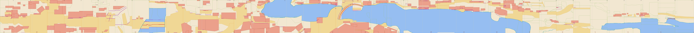

把原卷 41 片逐片描出地面要素——水面、岸线、道路、建筑基址、墙垣栏杆、桥梁、地形——并按卷面像素坐标拼接。已描 41 片。cm 为自卷首（右端）起的位置；画面上方为远、下方为近。虚线为相邻片的裁切线（每片只保留裁切线之间的要素）。
| 图层 | 要素数 |
| 岸线 | 26 |
| 桥 | 3 |
| 建筑基址 | 180 |
| 道路 | 108 |
| 地形 | 195 |
| 墙/栏/岸壁 | 130 |
| 水面 | 26 |

Opening tile of the scroll (cm 0-15.8), pure countryside with no buildings. From the top down: a flat misty spring field with bare trees (y 0 to about 1000), crossed by the dirt path of the charcoal-donkey train (y about 870-1000) which runs off the left edge into tile02 and fades into bare silk toward the right. Below the path the ground drops in a rocky, ink-washed far bank (y about 1000-1250) to the river, whose water fills the lower part of the tile (y about 1110 at the left, 1250 at the right, down to y 1800). At the left edge the right end of the plank footbridge from tile02 (X0007) rests on the bank at the foot of the big tree; a small creek runs under it into the river, so the water polygon has a notch up to y 1040 at x 0-105. A low ink-washed sandbar lies in the water at the lower left (x 0-290, y 1375-1450) and continues into tile02. A dark horizontal wash band along the bottom (y 1605-1775) is read as the near shore or mist; no near-bank line is drawn by the painter. The right third of the tile (x 700-1100) is empty silk with four collector seals; the field, bank, water line and bottom wash band are extrapolated across it to x 1100 so that nothing is cut off.
遮挡：The ground is hidden only by tree trunks: the big leaning tree (x 60-160, y 300-1090) covers the bank knoll and the path at x 100-160; the forked tree (x 560-720) covers the path at y 900-945; the tall slender tree and the dead snag (x 470-545) cover the path at y 850-920. The path edges were extrapolated straight through under them. The footbridge deck hides the creek water at x 0-105, y 1027-1040; the creek was extended under it. Collector seals at the right (x 700-1100) sit on bare silk over the field, bank wash and water; the bank top line, water line and bottom wash band were extrapolated level across them to x 1100. The far ground at the top-left (y 640-720) is hidden by a mist wash.
景深：{"mist_or_horizon_y": 700, "near_edge_note": "Open river water down to y 1800, overlaid by a dark horizontal wash band at y 1605-1775 (X0002) that reads as near shore or mist; no roofs, no drawn near bank.", "notes": "Oblique bird's-eye view: field (far) at the top, path at y 870-1000, bank drop at y 1000-1240, water below. The water line slopes gently down to the right (y 1110 at x 118 to y 1252 at x 820), i.e. the near-far axis runs slightly diagonally. The path runs roughly level from (0,930) to (1100,965). No roads converge; no horizon is drawn, the field simply fades into bare silk toward y 0."}
Open countryside with no buildings. The top half (y 150-700) is a grove of bare trees on one land mass that fills the upper-left; a band of mist at y 640-720 (x 560-1100) hides the far ground. Below the mist a dirt path runs along the far bank (y ~715-945), climbing from the right edge (feet of the last donkey at y ~920) up-left to the driver at (630, 770) and then disappearing behind the grove; it is extrapolated to the left edge at y 715-790. Below the path a curved earth bank (y 963-997, x 480-1100) is the top of a small inlet/creek mouth that opens toward the viewer; a wooden trestle footbridge (deck y 1005-1055, x 598-1015) spans the mouth from the grove land on the left to the land under the big tree on the right, and the empty punt (B0001) floats in the inlet just below it. The inlet widens into a channel bounded below by a long dark sand spit (upper edge y 1245-1380) that grows out of the left-bank land at x 0-420 and tapers to a thin line at the right edge (y 1378-1403), with a pale shoal hanging below it at x 880-1100 (y 1400-1470). Below the spit the open river fills the tile to y 1800 with two dark wash bands at y 1560-1610 and 1690-1760. Left edge (x 0, into tile03): grove land y 715-1245 (path hidden behind trees at y 715-790), spit y 1250-1335, open water y 1335-1800. Right edge (x 1100, into tile01): path y 850-945, bank line y 997, big tree/bridge end y 1000-1100, far bank meets water at y ~1110, channel water y 1110-1378, spit line y 1378-1403, shoal y 1403-1470, open water y 1470-1800.
遮挡：The grove on the left (x 0-640, y 150-1200) hides the far-bank path west of x 560; the path is extrapolated to the left edge at y 715-790 following the climb seen between the last donkey (1100, 920) and the driver (630, 770). The big tree trunk on the right (x 1000-1090, y 950-1100) hides the right end of the footbridge and the ground where its approach would meet the path; the abutment is placed at (1015, 1027) behind the trunk and the far-bank/water line under the tree is extrapolated at y 1100-1110. The mist band (560-1100, 640-720) hides all ground beyond the path. The punt B0001 covers water only. Where the spit meets the left bank (x 0-420, y 1245-1280) the dark washes merge and the two are drawn as one land edge.
景深：{"mist_or_horizon_y": 700, "near_edge_note": "Open river water to the bottom edge (y 1800), crossed by two dark wash bands; no near bank is drawn in this tile.", "notes": "The donkey path recedes diagonally from (1100, 900) up-left to (630, 770) and vanishes behind the grove, so the far ground rises toward the left. The inlet opens toward the viewer: its far edge is the bank at y ~970, the bridge at y ~1012-1048, the punt at y 1127-1215, the spit at y 1265-1400, then open water. Everything below y 1400 is the near river surface with no built edge."}
Rural opening section, scroll cm 25.8-41.6. The top of the tile (y 0-150) is blank silk/sky. Below it a misty grove of bare trees fills the right half (x 540-1100, y 120-870), a large pollarded willow stands at x 400-735, and a rounded hill with bare trees rises at the far left (x 60-235, y 490-600). A farmstead occupies the left on a dry field band (y 585-1000): a tiled-roof farmhouse H0002 behind, an open thatched hut H0003 with a brushwood fence X0015 in front-left, and an open lean-to shed H0001 with tables and a bench to its right, standing on a bare earth yard. Below y ~1000 the ground dissolves into mist and the river, which fills the tile from y ~1000 down to the bottom edge at y 1800 across the full width; dark horizontal wash bands at y 1160-1330 are water-surface/mist streaks, not a drawn shore. The far bank runs almost level at y ~1000 and drops to y ~1250 at the right edge around two reed-topped hummocks (X0012, X0011), which continue into tile02 where the first moored boat lies. At the left edge the farmstead compound continues into tile04 (large dome hut H0005, fence X0015); at the right edge the grove and the hummock bank continue into tile02. No road, bridge or boat is in this tile.
遮挡：The farmhouse H0002 front wall and ground line are entirely hidden by the thatched hut H0003 and the lean-to shed H0001; its base was extrapolated at y 760 from the eave height. The H0004 gable shows only a triangle above the hut roof, so its footprint is a guess placed behind the hut front. The hill X0013 base is hidden by the farmhouse roof and trees. Tree trunks of the grove hide nothing important on the ground; the ground under them is traced as grove. The water-to-land boundary at y ~1000 is a mist gradient rather than a drawn line and was placed at the lower edge of the dark wash band; the right-edge hummocks give the only firm bank line.
景深：{"mist_or_horizon_y": 1000, "near_edge_note": "The bottom of the tile (y 1335-1800) is open misty water with faint streaks; no near bank inside the tile except a doubtful dark patch at the bottom-left corner (X0016).", "notes": "Oblique view: the farmstead ground lines step down toward the viewer (farmhouse ~760, shed ~805, hut ~875, fence ~905). The grove stands on ground slightly higher in the picture (y 820-870) than the farm yard. The far bank falls from y ~1000 at the left to y ~1250 at the right edge, so the river widens toward tile02."}
Rural opening scene: from the top down, a sky/mist band to y~170, then a dense grove of large leafless trees (y 170-950) on the far bank with two thatched farm compounds standing among the trunks (left compound x 0-500, y 660-880 with farmhouse H0008, round shed H0007, small shelter H0006 and haystack X0018; right compound x 745-1100, y 585-920 with dome hut H0005, tiled house H0002, middle building H0004 and the open-front hut H0003 with rail fence X0014 and brushwood fence X0015) and a distant hill X0013 behind the right compound. Below the grove the far bank is a raised earthen bank (X0020) drawn with soft contour strokes, sloping from y~905 down to a flat pale shore at y 1160-1230; the water line is at y~1240 on the left falling to y~1212 at the right edge. The river occupies y~1215-1530 and reaches the bottom edge at x>960. The near bank (y 1505-1800) is a pale boulder mass X0019 on the left (x 0-575), a dark-washed rock cluster X0017 in the centre (x 560-950) and open water at the bottom-right corner. No road, bridge or boat; the only walkable surfaces are the compound yards and a gap between the compounds where a walking man stands. At the left edge (tile05 side) the farmhouse H0008, the far bank, the water and the pale rock X0019 continue; at the right edge (tile03 side) the right compound (H0002/H0003/H0004), the rail fence, the far bank, the water and the bottom-right water channel continue.
遮挡：The ground of both compounds is largely hidden: the farmhouse H0008 base is behind scrub (extrapolated at y 795), the rear house H0002 and the middle building H0004 are hidden behind the front hut H0003 and its roof (bases extrapolated at y 722 and y 770 from the eave heights), and tree trunks cross every hut. The far-bank ground y 905-1240 is open and unobstructed except for trunk bases at y 880-950. The near bank is read from the pale and dark-washed rock masses; the exact boundary between water and the dark wash of X0017 (x 565-830) is uncertain by about +/-20 px. No boats hide the water.
景深：{"mist_or_horizon_y": 480, "near_edge_note": "Near-bank rocks (pale X0019 at x 0-575, dark-washed X0017 at x 575-960) occupy the bottom of the tile; right of x 965 the water itself reaches the bottom edge.", "notes": "No road. All bands are nearly horizontal: grove and huts y 580-950, bank slope y 905-1240 (the water line drops slightly to the right, from y 1245 to y 1212), river y 1215-1530, near rocks y 1505-1800. The two compounds sit at the same depth (ground lines y 760-810); the rear house H0002 is set back (ground y ~722) and the hill X0013 is far beyond it."}
Pure landscape tile with no figures or boats. From top to bottom: plain silk sky/mist above y 230; a far-bank grove of bare trees (loose group at upper left, tall central group, dense right group) standing on a raised earthen bank that carries two thatched huts (H0009 main hut with a front thatch skirt and a back-left shed, H0008 at the right edge continuing into tile04) and a hatched lean-to/brushwood fence H0010; a big pollarded willow at the left edge whose knotted trunk reaches the bank foot at about y 1260. The earthen bank (X0020) drops to the river along a soft natural edge at y about 1262-1280, running the full width of the tile. Below is the river: an upper dark ink wash band (y 1300-1470), a large dark wash mass (x 290-1000, y 1460-1600) and a second dark band at lower left (x 0-470, y 1595-1650) separated by a thin unpainted strip. The near bank appears only at the bottom: a pale sand shoal outlined by a crisp ink line at y about 1600 (x 525-875) that rises to y 1505 at the right edge, carrying the pale ink-outlined rock mass X0019 (x 900-1100, y 1505-1800, continuing into tile04) with reed tufts in the bottom-right corner; to the left (x 0-210) the sharp washes end at y 1635-1655 and dry near-shore ground with soft washes fills the bottom band. At the left edge (to tile06): bank at y 1280, water y 1280-1635, dry ground y 1635-1800. At the right edge (to tile04): bank at y 1272, water y 1272-1505, rock/near bank y 1505-1800.
遮挡：The ground behind and under the main hut H0009 is hidden by its two thatch roofs and by the thatch skirt that hangs almost to the ground; the ground line was taken 10 px below the skirt edge and the back line extrapolated at y 765. The walls and ground of H0008 are hidden by scrub bushes and the right tree trunks; its base y 800 is extrapolated from the roof height. The willow crown (x 0-545, y 630-1120) covers the bank surface and the fence/lean-to H0010 but not any edge line. The far-bank waterline between y 1180 and 1300 is not drawn (plain silk); it was placed at y 1262-1280 just under the willow root. Left of x 210 the near-bank edge follows the soft lower boundary of the last sharp wash band (y 1635-1655).
景深：{"mist_or_horizon_y": 230, "near_edge_note": "The bottom of the tile is dry near-shore ground: at the left (x 0-210) soft-washed ground below the last sharp water wash, then the pale sand shoal with the ink-outlined rock X0019 at the right and reed tufts in the bottom-right corner.", "notes": "Oblique bird's-eye view; no roads or figures to give perspective. Bank, washes and edge lines are all nearly horizontal; the far bank is level at y about 1265 across the tile, the near-bank edge rises from y 1635-1652 at the left to y 1505 at the right edge, so the river narrows toward tile04 on the right. The grove recedes upward: left-group trunk bases at y 620-700, central group at y 650-730 behind the hut, right group at y 900-960 in front of it."}
Top to bottom: blank silk (mist) at y 0-160; a band of pale, distant crab-claw trees at y 160-660 (x 340-1100) that reads as a far treeline on dry ground; the crowns of five bare pollarded willows filling y 250-1060 across the whole width; the willow trunks standing on a bare earthen bank terrace whose bases step from y 1445 (middle-left willow, x 320-430) down to y 1600 (central willow, x 480-720) and y 1395 (right willow, x 717-853); and at the bottom a dry near-shore band (y 1545-1800, full width) rendered with long soft sweeping wash strokes, separated from the terrace by an eroded bank-edge line (y 1545-1602) and by the boulder cluster X0021 at the left. The river enters from tile05 at the right edge (y 1250-1628) as a channel of sharp dark ink washes with sand shoals, laps the base of the right willow and ends at x 700-730 against the roots of the central willow and a small boulder; left of that there is no water. At the left edge (x = 0) the bands are: willow terrace above y 1545, dry near-shore wash band y 1545-1800, both continuous with tile07's dry bottom band. There is no building, road, wall or bridge.
遮挡：The channel's left end is hidden behind the broad trunk and root mass of the central willow (W3, x 600-730, y 1400-1600); the far-bank line there was traced along the trunk's right edge. At the left edge the terrace edge is hidden under the boulder/root cluster X0021 (x 0-275, y 1395-1585); the line was placed along the bottom of the boulders (y 1545-1575), consistent with tile07. The base of W1b (x 230-300) is hidden behind W1's roots and the W1 base itself is inside the boulder cluster. The upper limit of the terrace is hidden by the willow crowns (y 250-1060) and is simply not painted; the distant treeline stands on blank silk. The boundary between water and dry shore band at y 1612-1628 (x 700-1100) is a change of stroke style, not a drawn line.
景深：{"mist_or_horizon_y": 160, "near_edge_note": "Dry near-shore ground across the whole bottom edge (y 1800), rendered as long soft horizontal wash strokes; no water, roofs or figures at the bottom.", "notes": "The terrace edge runs from (0,1545) at the left edge slightly downhill to the central willow base (600,1600); from there the channel's far shore climbs to the right willow base (785,1395) and to (1100,1250) at the right edge, so the land recedes toward the upper right while the water lies at lower right. Tree bases step down from upper-left to lower-centre (W2 y 1445 -> W3 y 1600) and up again to the right (W4 y 1395); trunk sizes follow (W3 largest = nearest). The distant trees at y 160-660 are much smaller and paler than the willows, giving the only far-depth cue."}
Rural willow grove with no traffic. Top to bottom: the upper two thirds (y 0-1000) are bare willow crowns; behind them a far field band with a low rail structure (X0022, y 330-400) and an upper path (y 430-480) on which one figure walks at the left edge. The middle band (y 1240-1470) is the earthen upper terrace: at left the thatched lean-to annex of farmhouse H0011 (x 0-375, front base y 1235) with a brushwood fence and brush pile (X0024) in front of it and a gnarled stump (x 50-190, y 1290-1430); to the right six gnarled pollarded willows stand on the terrace with bases at y 1280-1460. The terrace ends in an eroded bank step (light lobes y 1390-1470, dark foot line y 1500-1580) with the boulder cluster X0021 under the big willow at right. Below the step (y 1515-1800) the band of long horizontal wash strokes is the lower front road, continuous with the tomb-sweeping party's road in tile08; there is no water in this tile. Left edge (x=0, toward tile08): farmhouse yard and fence at y 1235-1335, upper terrace to y 1480, step foot at y 1515, front road y 1515-1800, far path y 430-480. Right edge (x=1100, toward tile06): upper terrace y 1292-1395, boulder step y 1395-1555, front road y 1555-1800, far path y 430-480.
遮挡：The whole ground above y 1240 is hidden by bare willow crowns except for faint lines at y 330-490; the far field band, the far path and the X0022 rails are read through the twigs and extrapolated across the tile. The far side of the near-bank terrace (y 1240-1290) is hidden behind the six willow trunks and the shed roof; its far edge was drawn as a straight line from the shed floor edge (y 1250 at x 180-420) to y 1290 at the right edge. The base of the shed at x 0-180 is hidden by the brush pile (X0024); the front base line was continued at y 1235 under it. The front road at the bottom is fully visible; nothing occludes it.
景深：{"mist_or_horizon_y": null, "near_edge_note": "The bottom of the tile (y 1515-1800) is the lower front road / terrace rendered with long horizontal wash strokes (the road of the tomb-sweeping party continuing from tile08); it runs to the bottom edge of the painting. No water in this tile.", "notes": "Three ground levels stacked in depth: far willows and field at y 260-520, the (hidden) middle ground y 520-1240 behind the crowns, the upper willow terrace at y 1240-1480, and below an eroded step the front road at y 1515-1800. The step foot slopes down to the right from y 1462 at x 440 to y 1580 at x 980, so the upper terrace sits higher above the road toward the right (tile06) side. The shed and the fence are drawn in a frontal oblique view with the eave line rising slightly to the right (1025 to 1055)."}
Dry countryside with no water. The top band (y 0-230) is a bare willow grove along the far edge, with a faint walled farmstead and a small thatched hut (H0013) at the upper left (x 100-400, y 360-505) and a low rail fence (X0022) behind the trees at the upper right. A broad dirt road slopes from the upper right (x 1100, y 215-400) diagonally down to the left edge (x 0, y 680-850); the tomb-sweeping party is on it. Below the road a field under the huge central willow holds two farmhouses: the left tiled house H0012 (= H0014 of tile09) with its front base at y 1235, and the right tiled house H0011 with a thatch annex running to the right edge, front base y 1240, fronted by a brushwood-fenced courtyard (fences X0027, X0025, X0024, gate X0026) whose fence line is at y 1320-1335. The bottom band is a wide dirt road along the front of the fences (y 1340-1680 at the left, pinched to y 1485-1560 at the right edge by the eroded mound X0023), and below it an ink-washed earth bank (X0028) with dark rock forms that runs out of the bottom of the tile. At the left edge the sloping road, the left farmhouse, the front road and the bank continue into tile09; at the right edge the sloping road, the thatch annex, the tall fence X0024, the mound and the bank continue into tile07.
遮挡：The central willow (x 130-1010, y 540-1250) hides the ground between the sloping road and the farmhouses, the body of the left farmhouse H0012 and the left end of the right farmhouse H0011; their front base lines are extrapolated from the eaves (y 1160 and y 1120) plus a single-storey wall height, checked against the doorway foot of H0011 (y 1240) and faint base lines of H0012 (y 1220-1240). The brushwood fences X0027/X0025/X0024 hide the lower part of H0011's front wall. The far farmstead and hut H0013 are faded and partly under the willow at x 0-100; their lines are traced as the pale ink allows. The upper band of the sloping road at x 900-1100 is partly behind twig sprays. The road edges are nowhere drawn; both roads are reconstructed from where the figures walk and from the wash strokes of the slope.
景深：{"mist_or_horizon_y": null, "near_edge_note": "An ink-washed earth bank (X0028) with dark rock forms, dropping away below the front road; no water visible.", "notes": "The sloping road runs diagonally from about (1100,310) to (0,765); figures on it grow larger toward the lower left. The front road runs almost horizontally at y 1340-1680. The far farmstead at y 365-505 and the rail fence X0022 at y 320 are the farthest ground features; the tops of the trees reach the tile edge, so there is no horizon or mist line."}
Rural outskirts with no drawn water surface. Top band (y 40-340) is a ploughed field of horizontal furrows crossed by a raised diagonal dike-path (X0031) that runs from the top-left farmer's path (X0035) down-right under the willow crowns; a second faint field path (X0034) enters from the left at y 285-335. Below the field a row of big bare willows (x 380-1000) stands on a low hillock whose crest is at y ~510 and whose foot is at y ~600; at its right end the small white hut H0013 sits on the far ground and continues into tile08. Middle band (y 540-800): the farmstead at the left (thatched house H0017 with its railed shed H0018 and the fence X0033 continuing into tile10; the second roof H0016 behind it) with a threshing yard (ox, stone rollers) below, and open bare ground to the right along which a farm track runs to the right edge. Lower-centre: the grassy knoll X0029 with its rock outcrop and the forked post X0030, the tiled house H0014 with its open pavilion H0015 at the left (H0012 is the right end of the same roof mass as catalogued from tile08), and a grove of thin bare trees on the near face of the knoll. The procession road (y ~1300-1575 at the right edge, ~1480-1640 at the left edge, hidden under the big willow at x < 300) runs diagonally down to the left into tile10; below it an ink-washed earth bank slopes to the bottom edge, where a tentative stream edge (no water drawn) is marked for stitching with the neighbours.
遮挡：The field's lower boundary, the hillock's far side and the back of the farmstead are hidden under the crowns of the willow row (x 380-1000, y 80-640) and the left willow group (x 0-300, y 300-600); the field polygon is closed at y~340-380 by extrapolation. H0016's walls are hidden by H0017 and the willow stump; its ground line is extrapolated at y 600. H0017's wall foot is hidden by the ox and the stone rollers and extrapolated at y 620 from the visible right corner. The east end of the tiled house (x > 940) and the ground below it are hidden by willow t09-006 hanging in from the right edge; H0012/H0014 ground line extrapolated at y 1197 to the tile edge. The knoll's crest hides the feet of the pointing man and the post. The procession road and the bank west of x 300 are hidden under the big lower-left willow; the road is carried to the left edge at y 1480-1640 by continuing its slope.
景深：{"mist_or_horizon_y": null, "near_edge_note": "Ink-washed earth bank (X0028) sloping to the bottom edge; no water surface drawn, only a tentative lowest contour at y 1590-1775.", "notes": "Oblique bird's-eye view with no river: ground levels step down from the far field (y 40-340) over the hillock (crest y~510, foot y~600) and the farmstead/bare ground (y 600-1050) to the knoll and tiled house (ground y 1105-1200) and the procession road, which runs diagonally from (1100,1295-1575) down-left to (0,1480-1640). The farm track runs roughly horizontally at y 620-800 to the right edge; the field dike runs from (252,96) to (363,354)."}
Top band (y 0-130): far ground with a row of three thatched houses (H0024/H0022/H0020, base y 125) and a gate post at x 475-525, a tiled roof corner H0026 at x 140-200, and the square garden pavilion H0027 on a raised terrace at the top-left corner (continues into tile11). Below it (y 130-300) open fields crossed by a far lane/dike (y 128-165, x 200-1100, with tiny load-carriers and a haystack at x 1000) and a second dike line at y 296-322 (x 600-1100); bare trees at x 150-560 and the crowns of two big willows at x 600-1100. The middle band (y 300-660) is the roadside: two tiled houses behind the open thatched tea shed H0025 (front base y 656, x 0-520, continuing into tile11), its lean-to H0019 (x 520-660), and at the right the thatched stall H0018 with a lattice railing (base y 662-666, x 845-1100) in front of the farmstead H0017 of tile09. The dirt road runs across the whole tile at y 656-880 (figures, a saddled horse at x 500-600, a lying ox at x 930-1080). The lower half (y 760-1800) is the near bank: bushy pollarded willows (y 760-1150), a reed bed (y 1000-1250), and the huge willow whose trunk stands at x 520-800 with its root at the bottom edge. The only water is the bottom-left corner (x 0-540, y 1125-1800), where the cargo boat B0002 is moored; the far bank enters from tile11 at (0, 1125) (tile11 quay X0046 drops to the water at y 1120 there) and the water closes against the big willow's rootstock at x 490-540. At the right edge (x 1100) everything is land: far lane y 150-172, dike y 300-322, stall railing y 666, road y 666-980, reeds/grove below.
遮挡：The ground behind the tea shed (y 450-560) is hidden by its thatch roof: the base lines of H0023, H0021 and the uncatalogued left tiled house are extrapolated from their eave heights, stacked front-to-back behind the shed's back line. The far bank behind the moored boat is entirely hidden by the boat's deck cargo (rope coils, ladder) and the willow twigs; it is extrapolated as a smooth curve from tile11's quay end at (0,1120) down to the willow rootstock at x 540. The stall H0018's roof and the farmstead H0017 are partly hidden by the willow trunk at x 950-1010 and its crown; the far field at x 600-1100 y 180-300 is seen through willow crowns. The ground under the bushy willows (x 0-720, y 760-1150) and under the big willow's crown is plain earth, not drawn.
景深：{"mist_or_horizon_y": null, "near_edge_note": "Bottom edge: water with wavy strokes and the boat hull at x 0-490; the big willow's rootstock and plain near-bank ground at x 490-1100.", "notes": "No horizon or mist; the far ground is stacked in horizontal bands (thatched row y 40-125, far lane y 128-165, fields, second dike y 300-320). The roadside road runs almost horizontally at y 656-880 and the ground drops to the water only in the bottom-left corner; the far bank slopes down to the right from (0,1125) to (540,1500), i.e. the river's shore recedes toward tile11 on the left."}
Riverside quay with restaurants, just downstream (left) of the Rainbow Bridge area. Top band (y 0-300): a belt of bare and leafy trees on the far ground, with the big tiled house H0031 at the top left, the two-storey house H0029 behind the eating shed, and the square pavilion H0027 on a raised, balustraded terrace (stairs at x 795-870) at the top right. Below it a row of shop fronts faces the river: the two-storey shop H0030 (base y 450, x 0-355), the open eating shed H0028 (front y 528, x 470-775) and the thatched shop H0025 (front y 600-640, x 780-1100, continuing into tile12); in front of them the tea house H0032 with its trellis pavilion (front y 750, x 0-520) stands on the plaza itself. The open earthen plaza (y 450-1000 at left, y 640-1130 at right) carries the greeting group and the porters and ends at an earth quay drop running from (0,1000) to (760,1085); right of x 760 the bank becomes a sloped earth ramp under the big willow down which porters walk to the boats, reaching the water at about y 1250 at the right edge. The river fills y 1000-1800 with three moored cargo boats; a sandbank of the near shore occupies the bottom-left corner (x 0-660, y 1530-1800). Left edge (x=0, toward tile10): H0031 roof y 0-200, shop H0030 base y 450, tea-house roof/front y 480-755, plaza y 755-996, quay edge y 1000, water y 1000-1530, sandbank y 1530-1800. Right edge (x=1100, toward tile12): tree belt y 0-75 and 235-470, roof corner H0026 y 55-140, thatched shop H0025 base y 455-642, plaza y 642-1130, bank slope y 1130-1250, water y 1250-1800 under the willow.
遮挡：The ground behind the shop row (y 0-450) is entirely hidden by roofs and trees: the bases of H0031, H0029, H0026 and the uncatalogued tiled roof are extrapolated just behind the building in front of them. The tea house H0032 hides the plaza ground at x 0-520 y 480-755, and a strip of ground behind its roof (x 0-350, y 452-480) is inferred from the man with the carrying pole painted above the roof edge. The quay water line at x 0-760 lies under the cabins of boats B0004 and B0003 and under the gangplank X0048; the quay-top edge was taken instead, from the shaded band at y 950-1000 and the rope dropping from bollard X0049. At x 760-1100 the willow twigs hide both the slope foot and the water, so the bank line there is drawn from the porter's feet (840,1215) and the cabin roof of B0002 (y 1250+). The sandbank edge right of x 560 fades into ripples and is extrapolated.
景深：{"mist_or_horizon_y": null, "near_edge_note": "Bottom of the tile: the sandbank of the near shore at the bottom left (x 0-660), open river wash below the boats in the middle, and the hull of boat B0002 under the willow twigs at the bottom right.", "notes": "No street vanishing line; the shop fronts step down toward the viewer from left to right (H0030 base y 450, H0028 y 528, H0025 y 600-642) while the quay edge drops from y 1000 at the left to y 1250 at the right, so the plaza is a wedge that widens to the right. The thatched shop recedes toward the right edge (front line sloping 40 px over 320 px). The pavilion terrace (y 195-290) is the farthest ground feature, placed higher than the shop roofs."}
A river bend seen from the far side: all land is at the top, all water at the bottom. Top band (y 60-470) is the upper street running diagonally down to the right, with the small shop H0035 and the hut X0060 at the left (x 90-205), the open-front shop H0034 with the 王家紙馬 sign (x 300-735, base y 232), the large house H0031 behind the timber frame X0054/X0053 (x 745-1100, ground line hidden, extrapolated y 180) and the left end of the two-storey shop H0030 at the right edge (x 965-1100, base y 335); porters walk on the street down to y 470 at x 1000-1100. Below the street a bare willow grove (x 0-560, y 165-660) hides the ground on the left, with the wattle-fenced yard X0059 (x 205-355, y 600-675) in front of it; the street-side porch H0033 (roof y 335-400) and the big riverside restaurant shed H0032 (roof y 395-640, mat awning to y 725, front ground line diagonal y 700-840) occupy x 440-1100. The land/water line is one far bank: behind the moored boats at the left edge (y 655-668), then down the left side of a sandy bank tongue that descends to a tip at (560,1160), back up to the big cargo boat's bow (655,1100) and along the foot of the fence X0057 / mound X0056 to the right edge at y 1000. The rest of the tile (y 1000-1800, and the whole bottom) is open river water with ripple lines. Left edge (x=0, toward tile13): street y 65-250, willow grove y 165-655, water line at y 655, water below. Right edge (x=1100, toward tile11): H0031 roof y 0-180, H0030 base y 335, street y 335-470, shed H0032 roof/ground y 500-840, quay walk y 835-995, bank at y 1000 (joins tile11's earth quay edge X0046), boat B0004 and water below.
遮挡：The willow crowns (x 0-560, y 165-660) hide the ground between the street and the yard; the street's lower edge there is extrapolated at y 250-345. The roofs of H0033 and H0032 and the awning X0058 hide the porch's posts and the shed's back; the porch footprint is placed 80 px below its eave and the shed's back line under the roof's top edge. The timber frame X0054/X0053 and H0030 hide the whole front of H0031; its ground line is extrapolated at y 180-208 under the eaves. The three moored boats at the left edge hide the water line at x 0-230, placed at y 655-668 just below the yard fence; the cargo boat B0004 (x 650-1100, y 960-1525) covers the bank foot at x 700-1100, placed just above its far gunwale at y 950-1000.
景深：{"mist_or_horizon_y": null, "near_edge_note": "Open river water with ripple lines across the whole bottom edge; the large cargo boat B0004 lies at the lower right (x 650-1100, y 960-1525).", "notes": "Oblique view with strong diagonals: the street band runs from the upper left (0,65-250) down to the lower right (1100,335-470); the shed front, the fence X0057 and the bank tongue all slope down to the right in parallel; the bank line rises again from the tongue tip (560,1160) to the right edge (1100,1000). No horizon or mist; the top of the tile is cut by roofs."}
Riverside restaurant block on the far bank with moored boats in front. Top to bottom: a street (y 130-170) runs the full width behind the block, lined on its far side by the long open-front shed H0037 (eateries, umbrella stall, counter shop, x 0-745), then the bamboo fence X0061 and a big tree (x 720-950) and the small shop H0035 at the right edge; the street's near edge is hidden under the restaurant roofs. Below the street stands the restaurant H0038: its river-side room on a timber stilt platform (x 0-190, platform base y 575), the bamboo-mat annex X0064 on its own plank base (x 190-525, base y 623), the white compound wall X0062 (x 520-740, base y 590) with the hip-gable hall H0036 behind it, and at the right the open yard under the bare willow (x 745-1100, y 176-640). Below these an earth bank with rubble slopes to the water line at y about 648, which is almost entirely hidden by the moored boats (y 580-1060); everything from y 650 to 1800 is open river. Left edge (x=0, toward tile14): street y 130-166, restaurant platform base y 575, water line y 648. Right edge (x=1100, toward tile12): street y 136-176, willow yard y 176-640, water line y 650.
遮挡：The near edge of the street (y 150-185) is hidden under the restaurant roof ridge at x 0-830 and extrapolated at y 166-176. The walls and ground line of hall H0036 are hidden behind the compound wall X0062 and the willow; its base y 560 is extrapolated from the eave position. The ground under the restaurant platform at x 0-190 (y 575-648) is hidden by the mat shelter of boat B0010 (from y 577) and the far bank line there is extrapolated from the rubble bank visible at x 230-540. The bank at x 540-800 is hidden below y 650 by the plank roof of boat B0008, and at x 820-1100 by the mat cabins of boat B0005 (from y 603); the water line is drawn at y 648-650 throughout. The water surface at y 650-1060 is covered by the boats B0009, B0007, B0005, B0006 and the hull of B0011; the river polygon includes these areas. The willow crown hides most of the yard at x 745-1100.
景深：{"mist_or_horizon_y": null, "near_edge_note": "Open river water with ripple lines reaches the bottom edge of the tile (y 1800); no near bank in this tile.", "notes": "The ground recedes in horizontal bands with no diagonal roads: street y 130-176 (farthest), building bases y 575-623, wall base y 590, bank y 590-648, water line y 648, boats y 580-1060, open water to y 1800. The restaurant floor is raised about 43 px above the quay ground and the annex base reaches 48 px nearer than the platform, so the block steps toward the viewer from left to right."}
Riverside quarter on the far bank with moored boats below it. Top to bottom: a street (y 0-165) runs behind the roofs, visible only at the top right where the open tea shed H0037 and the umbrella stall K0002 stand on it and porters walk at x 700-780; at the top left the 彩楼歡門 scaffold X0073 rises over the roofs. Below the street a continuous row of tiled buildings fronts the river: at the left the end of wine house H0040 and an uncatalogued 歇山 gable house, both closed toward the river by the plastered wall X0074 (base y 505, x 0-372); in the middle the two-storey wine house H0039 (ground line y 495, x 400-650) with the railed ramp X0071 down to the bank; at the right the raised dining hall H0038 (x 650-1100) whose posts stand on the timber quay X0069 (base y 580). The far bank itself is a narrow earth strip: 40 px wide under the wall (y 505-545), widening to an open apron in front of H0039 (y 495-660) where two men talk and the hawsers of the boats are made fast to a stake at (400,545), and ending at the quay. Water fills everything below the bank line (y 545 at the left edge, y 660 in the middle under the big boat, y 640 at the right edge) down to y 1800; the upper part is hidden by four moored boats, the lower half (y 1230-1800) is open rippled water. Left edge (x=0, toward tile15): street y 0-165, H0040 wall base y 505, bank strip y 505-545, water from y 545. Right edge (x=1100, toward tile13): street y 0-168, tea shed base y 165, H0038 ground line y 565, quay face to y 580, rubble bank to y 640, water from y 640.
遮挡：The street at the top is hidden at x 0-700 by the roof of H0039 and the scaffold X0073; its near edge there is extrapolated from the tea shed base (y 165) and the roof ridge. The ground floors of H0040 and the gable house are hidden behind the plastered wall X0074, so their front base is the wall base. The water line is hidden at x 0-280 by boat B0013 (traced at the dark line y 545 just above its cabin), at x 380-620 by the foredeck of B0011 (traced at the first boat line y 640-662) and at x 620-1100 by boat B0010 and its cargo (traced just below the quay post feet, y 592-640, using tile13's rubble bank). Back lines of all footprints are extrapolated from the roof depths.
景深：{"mist_or_horizon_y": null, "near_edge_note": "Open rippled water across the whole bottom edge (y 1800); the nearest objects are the stern of passenger boat B0012 (to y 1232) and the big cargo boat B0011 (hull to y 1012).", "notes": "Oblique view from the near (bottom) side: the street at y 0-165 is the farthest ground, the building fronts step down from y 165 (tea shed) to y 495-565 (river-front buildings), the bank at y 545-660 and the boats in front. Building fronts are parallel to the x axis; the apron widens toward the viewer in front of H0039."}
Top to bottom: a row of tile-roofed open-fronted shops lines the far side of the far-bank street at the very top (building fronts at y 130-172, roofs cut by the top edge); the street itself (y 130-300, rising to y 90-225 at the right where it passes behind the wine house) carries the two-wheeled freight cart and donkeys. Below the street the open earthen bank (y 300-485) is where the three porters walk; at its right end stands the two-storey wine house H0040 (x 700-1100), whose plastered ground-floor wall (X0074) meets the ground at y 520-524 and forms the quay edge there. The land/water line runs at y 485 on the left, dips to y 505 under the porters and reaches y 524 under the wine-house wall. Everything below (y 485-1775) is the river, packed with moored and towed boats in y 490-1232 and open rippled water below; the bottom 25 px (y 1778-1800) is the mounting border, not painting. Left edge (x=0, toward tile16): shop H0042 front base y 172, shed H0043 post, street y 172-295, bank ground y 295-485, water from y 485. Right edge (x=1100, toward tile14): street hidden behind the wine house at y 90-225, wine-house roof from y 228, wall base y 524, water from y 524.
遮挡：The ground of the far-bank street right of x 700 is hidden by the wine-house roof (y 228-345) and the huanmen scaffold X0073 (x 950-1100, y 20-300); it was extrapolated by continuing the street's slope (near edge y 262 at x 700 to y 225 at x 1100, far edge y 132 to y 92). The bank line between x 720 and 840 is hidden under the wine-house awning and the mat-arch canopies of boats B0013/B0015 and was interpolated from y 505 to y 521. The water surface between y 490 and 1232 is almost entirely covered by the boats B0012, B0013, B0014, B0015 and B0016 and by the foreground boat's mast and rigging; the water polygon runs through them. The backs of all buildings are cut by the top edge or hidden by roofs and were extrapolated (H0042 and the stall row at y 60/30, wine house at y 370).
景深：{"mist_or_horizon_y": null, "near_edge_note": "Open rippled river water down to y 1730, then plain silk to y 1775 and the mounting border from y 1778; no near bank in this tile.", "notes": "Oblique bird's-eye view: the far-bank street recedes toward the upper right, its building fronts rising from y 172 at x 0 to y 92 at x 1100 while the wine house in front of it stands with its base at y 524; boats farther from the viewer (y 490-900) are drawn smaller and higher than the foreground boat B0014 (hull base y 1232). The tow line from the masthead (268,300) to (0,455) is in the air above the bank, not a ground line."}
The far bank fills only the top quarter of the tile (y 0-505); everything below is the river. Top to bottom: distant tile roofs of the rear ranges of a large wine-house complex (y 0-55 and y 55-260, H0045, whose front wall is hidden), then the two-storey riverside wing H0044 (x 0-540) standing on wooden piles over the water with its pile feet / beam at y 503, and to its right the open reed-mat awning shed H0043 (posts x 585-905, ground y 395-405) on a flat earthen terrace that continues up to the open-front shop H0042 at the top right (front columns end at y 182) and to the right tile edge as a street. Right of the piles (x 540-1100) the painter did not draw a bank edge: the terrace wash simply fades into the water around y 470-505, so the bank line there is extrapolated. Left edge (x=0, toward tile17): the pile platform and water line at y 503, the wing H0044 and the main hall H0045 continue. Right edge (x=1100, toward tile15): shop H0042 ground at y 182, the street/terrace band y 182-460, the extrapolated bank at y ~472, water below; the tow rope leaves the tile at (1100,403) toward the trackers on that bank.
遮挡：The ground of the far bank is almost entirely covered: the main hall H0045 and the two rear roofs show only roofs, their walls and ground lines being hidden by the wing H0044 and the shed H0043 in front; their bases are extrapolated one storey below the visible eaves. The true land edge behind the pile platform (x 0-540) is hidden by the wing; the platform's beam at y 503 is used as the water line. Right of x 540 no bank edge is drawn at all, so the far-bank line from (540,503) to (1100,472) is extrapolated from where the terrace wash ends and the boat superstructures begin. The water polygon includes the areas hidden by boats B0017, B0015, B0016 and B0019 and under the stilts. The shed roof hides its own rear posts; the back line of H0043 is set where the mat roof meets the tiled roof behind it.
景深：{"mist_or_horizon_y": null, "near_edge_note": "The bottom of the tile (y 1200-1800) is open water with wave lines; only the bow/stern fragment of the moored boat B0019 touches the bottom-left corner (x 0-55, y 1340-1720). No near bank in this tile.", "notes": "Everything on land is on the far side of the river. The oblique view runs along the far bank: the shop at the top right (ground y 182) is farthest, the terrace comes nearer to the viewer toward the left and bottom (shed posts y 395-405), and the pile platform (y 503) is nearest. The tow rope gives the direction of travel: it runs from the boats at (560,520) up to the right edge at (1100,403), i.e. the trackers walk on the far bank in tile15. The far roofs step back in three tiers (y 0-55, y 55-260, y 180-250)."}
Top band (y 0-505) is the far bank with a riverside wine house: the big tiled main hall H0045 across the top, its lean-to annex H0046 (lattice band y 250-290, whitewashed wall down to y~405 behind a shrub row), and at the right the two-storey wing H0044 whose lower walkway stands on wooden piles that enter the water at y~505. At the left is the walled house H0047 (whitewashed courtyard wall with closed plank gate, base y 304-322), a wattle fence X0090 (base y~215) and the huge bare tree (trunk x 90-170, base y~300). Below the buildings the ink-washed rocky mound X0089 slopes to the water line at y 495-540; a tracker walks a towpath along its top at the left edge. Water fills y~505-1650 across the whole tile. The only near-shore land is a wash-rendered mound in the bottom-left corner (x 90-600, y 1650-1800) to which the laundry boat B0019 is moored by a chain; the rest of the bottom edge is water. Left edge (x=0, toward tile18): tree crown y 0-250, towpath/mound top y 300-400, bank slope to water at y 505, water 505-1685, near-shore mound 1685-1800 (behind boat B0021). Right edge (x=1100, toward tile16): main hall roof y 0-250, wing floors 250-440, piles 440-508, water 508-1800.
遮挡：The main hall H0045 front and ground line are hidden by its annex H0046 and the wing H0044; the front base was extrapolated 60 px behind the annex base. The annex base and the wing's lattice-panel base are hidden by the shrub row (y 350-412); the base was read at the dark edge just below the shrubs (y~405-415). The left end of the courtyard wall is hidden by a bush (280-325,195-280). The far-bank water line is hidden by the bow and canopy of cargo boat B0018 at x 228-350 and interpolated straight. The near-shore mound's left end is hidden by the stern of boat B0021 (x 0-85, y 1690-1800) and extrapolated to the tile edge; the hull of B0019 (y 1640-1720) hides where the mound meets the water behind the boat. No roofs hide ground in the water band.
景深：{"mist_or_horizon_y": null, "near_edge_note": "Bottom edge: a wash-rendered near-shore mound (sandbar) at x 90-600 with the moored laundry boat B0019 behind it, boat B0021's stern at x 0-85, and open water with wave lines from x 600 to 1100 (rudder of B0019 at 750-950, 1500-1680).", "notes": "Oblique view with the far bank nearly horizontal: the buildings' bases step from y~304-322 (house wall, left) down to y~405 (annex) and y~505 (wing piles, right), i.e. the bank descends toward the right where the wine house stands out over the water. The river band spans y~505-1650 with no island; the tow rope from the tracker (60,330) to the mast head (1040,495) is a diagonal cue crossing the bank. No street or horizon in this tile."}
Open river tile. Top band (y 0-135) is the far bank with two open-front shops (H0052 at the upper left, H0048 at the centre) and a pale courtyard wall (X0092) east of them; a narrow riverside street runs in front of the shop fronts (y 130-175) and, right of x 560, turns into the sloping tow path on which five trackers haul a rope down to the right edge, with a big willow standing on the bank at the upper right corner. The far bank line is hidden at the left behind the moored cargo boat B0023 (y ~165-190) and falls diagonally from (560,210) to (1100,555) along the ink-washed rocky slope X0089. Everything between that line and the near bank is one river body: boats B0024/B0023 at the top left, B0020 entering at mid-right, B0022/B0019/B0021 at the lower right. The near bank is the bottom band: at the left edge a small landing where figures stand (y 1265-1440) beside the trunk of the enormous willow, then a short inlet reaching the thatched house H0050 (water down to y 1440 at x 240-350), the pale earthen mound X0093 (y 1390-1560), and a pale lower slope that runs to the water's edge at x ~800 where the wide-hat man sits. The lower-left corner is a cluster of roofs seen from above (H0051 tile hip, H0050 thatch, H0049 tile gable) whose ground lines are hidden. Left edge (toward tile19): far-bank street y 130-175, water y 190-1260, landing y 1265-1440, roofs below. Right edge (toward tile17): far-bank path y 370-460, bank slope to y 555, water y 555-1800.
遮挡：The far-bank water line from x 0 to 560 is hidden behind the moored cargo boat B0023 (and the small boat B0024 and the arched-roof boat behind it); it is extrapolated at y 170-190, just under the boat roofs and under the feet of the figures on the street. The right end of the courtyard wall X0092 and the far-bank path at x 620-900 are partly covered by the willow fronds; the path there is placed from the trackers' feet. The near-bank roofs hide all ground lines in the lower-left corner: H0051's and H0049's bases are cut by the tile bottom and extrapolated straight down from their roof outlines, and H0050's front base is extrapolated ~50 px below its front eave, parallel to the ridge, just behind the H0049 ridge line. The mound X0093's lower-left half is hidden by H0050's thatch. The great willow's crown covers the river from x 0 to 820 but no land is under it except the trunk zone at x 40-340, y 1000-1450. Boats B0022, B0019, B0021 and B0020 all float on the river; the near-bank line at x 760-810 is drawn just left of the wide-hat man.
景深：{"mist_or_horizon_y": null, "near_edge_note": "Bottom edge: tiled roofs of H0051 (x 0-340) and H0049 (x 300-615), pale bank slope (x 615-790), then water with the stern of boat B0021 (x 820-985) and the moored masted boat B0019 at the right corner.", "notes": "Oblique bird's-eye view: the far-bank street is a thin band at y 130-175 while the near-bank mound and houses are large; the tow path runs diagonally down-right from (560,190) to (1100,420) showing the far bank receding to the right; the near-bank thatch H0050 runs diagonally down-right from (140,1440) to (650,1635). River surface strokes run horizontally across the whole middle band."}
Open river reach between the far-bank boat landing and the near-bank quarter; the Rainbow Bridge itself is NOT in this tile (it lies west of the tea house H0057, i.e. beyond x<0 in tile 20). Top band (y 0-285): far bank with the east end of the tea house and its open table shed under a big willow at the left (ground y~283), a slat-fenced yard and a reed-mat shed in the middle (ground falling from y~225 to y~165), and the open-fronted shop H0052 at the right whose frontage (y 150-165) is hidden behind the moored boats B0028/B0027/B0023. Water fills the middle (y~165-285 at top to y~1220-1365 at bottom), with the stern of the big boat B0034 and B0031 at the left edge, B0029 crossing at y 245-480, the small boat B0025 and the fisherman among the willow fronds. Bottom band: the near bank with moored boats B0032/B0030 behind the restaurant roof at the left, bare willows at x 150-470, the passenger boat B0026 lying diagonally with its bow at (640,1360), a landing ground at x 640-1100, y 1225-1470 where five figures stand, and large roofs seen from above (H0053 hip roof, H0051, H0050) filling the lower right; a street with the umbrella stall K0003 and a porter runs along the bottom-left below the restaurant front (y>1585). Left edge (x=0, tile 20): far bank y 284, near-bank water line y 1222, restaurant front base y~1600, street to the bottom. Right edge (x=1100, tile 18): far bank y 162, shop front base y 150, near-bank water line y 1272, willow trunk base y~1430, roofs H0050/H0051 below.
遮挡：Far bank: the water line from x 90 to 420 is hidden by the mat roof of B0029 and from x 480 to 1100 by the moored boats B0028, B0027 and B0023; it was extrapolated along the foot of the table shed (y 283) and the shop frontage (y 162-168). The far-bank path right of x 640 is the 10-15 px strip between the shop posts and the boats. Near bank: between x 0 and 280 the land is hidden by the restaurant roof H0059 and the moored boats B0032/B0030, so the water line was placed along the hull bottoms (y 1222-1260); between x 280 and 560 the bare willow crowns hide everything and the line was extrapolated to the bow of B0026; right of x 930 the willow trunk hides the bank, extrapolated at y~1260-1272. All near-bank houses (H0053, H0051, H0054, H0050, H0058, H0049) show only roofs cut by the tile bottom, so their footprints are the roof outlines and front_base_y is clamped to 1800. The tea house H0057 and restaurant H0059 are cut by the left edge.
景深：{"mist_or_horizon_y": null, "near_edge_note": "Roofs seen from above (H0053 hip roof, H0054 lean-to, H0051, H0050) fill the bottom from x 300 to 1100; the bottom-left is the street with the porter and the roof corner of H0058.", "notes": "Oblique view: the far bank falls from y 284 at the left to y 162 at the right (the far-bank line is drawn as a gentle diagonal), while the near bank rises from y 1222 at the left to a bulge at (640,1362) under the boat bow and back to y 1272 at the right. The big roof's ridge runs diagonally from (540,1317) to (1090,1560), parallel to the near bank. No bridge in this tile; the Rainbow Bridge foot is west of the tea house H0057 in tile 20."}
Top band (y 0-140) is the far-bank street with an open-air dining terrace at the left (tables, umbrella stall K0006, fence X0109) and pedestrians and a cart heading toward the bridge; at its right end (x 560-660) the street drops onto the east approach of the Rainbow Bridge where the vane pole X0104 and the table stall K0004 stand, and right of that the two-storey tea house H0057 with its mat-awning terrace runs to the right edge (front base y 288). The Rainbow Bridge X0106 crosses the upper-left quarter: its deck centre line enters at (0,250), crests at x 250 (y 237) and descends to the east abutment at (618,455); through the arch the far-bank quay X0107 (railing y 465-540, plank revetment y 540-580) is visible, so the far-bank water line runs at y 580 under the bridge and climbs behind the big boat to y 290 in front of the tea house. The whole middle (y 290/580 down to 1190-1215) is the river, filled by the boat in trouble (B0034) and the moored boats. The near bank (y ~1190-1215) is hidden behind the moored boats and the huge hip roof of restaurant H0059 (roof y 1170-1460, open front to the south at y 1625); at the left the lattice awning X0108 covers booth H0063 and the umbrella stall K0005 on a short quay. Below the restaurant front runs the near-bank street (y 1620-1660, widening to the full bottom-right corner at x 940-1100 where figures walk), and the bottom edge is filled with the roofs of H0061, H0058 and H0065 south of that street. Left edge (toward tile21): far-bank street y 12-140, bridge deck y 215-285, quay railing/revetment y 465-580, water y 580-1190, awning/booth/roofs below. Right edge (toward tile19): tea house to y 288, water y 290-1215, restaurant roof, near-bank street y 1575-1800.
遮挡：The far-bank water line is visible only under the bridge (quay wall foot at y 580, x 0-548); from x 548 to 900 it is hidden by the bow, lowered mast and rigging of B0034 and by the bridge's east abutment, and from x 900 to 1100 by the stern of B0034 and the mat roof B0029, so it is extrapolated as a ramp from the quay up to the abutment and then along the tea-house terrace edge (y 288-298). The ground under the bridge deck (y 300-470) is the arch soffit, not land. The near bank is completely hidden by the moored boats (B0033, B0032, B0030), the umbrella stall and awning at the left, and the back eave of the restaurant roof; it is set at the base of the boats (y 1180-1215). The near-bank street is hidden under the bottom roofs except at x 560-760 and x 940-1100. The restaurant's back wall, the booth's back, and the walls of H0062/H0061/H0058/H0065 are under roofs and are extrapolated; H0065's and H0062's footprints are roof outlines. The tea house's right part is under the willow crown.
景深：{"mist_or_horizon_y": null, "near_edge_note": "Tiled roofs of the houses south of the near-bank street (H0065 at left, H0061, H0058) fill the bottom edge; the street itself is visible at the bottom-right corner (x 940-1100) with walking figures.", "notes": "Strong oblique bird's-eye view. The far-bank street (y 12-140) is the farthest ground; the bridge deck arcs from (0,250) over a crest at x 250 down to its east foot at (618,455), i.e. it crosses the river diagonally toward the far bank on the right and toward the near bank on the left (west abutment in tile21). The far-bank water line lies at y 580 under the bridge but at y 290 in front of the tea house: the quay seen through the arch is drawn nearer than the terrace to its right, as the river bends. The restaurant is seen from above with its open front toward the viewer (south); the houses beyond it show only roofs. Figures on the far-bank street are about 60 px tall, on the bridge 70-90 px, in the restaurant 70 px and on the near-bank street 90 px."}
The west (left) half of the Rainbow Bridge 虹桥 (X0110) dominates the tile: its timber arch springs from the near bank at the lower left (foot x215-340, y1040-1078) and rises to the right tile edge (deck y172-288 at x1100), where it continues into tile20 toward the crest and the far-bank abutment. The top strip is the far bank: the pile-borne terrace of the restaurant H0067 at the top-left (piles end at y300, x0-160), bare trees behind the bridgehead (x200-520), and an open-air dining terrace with rows of tables, a back fence X0109 and umbrella stalls at the top-right (x450-1100, y12-172). The river is visible right of the ramp and through the arch (x340-1100, y300-1065) with the big boat B0034 under the arch; it is one body that also passes under the deck and leaves the tile at the top-left between the terrace piles (y300) and the near-bank crowd (y352-430 at x0-150). The near bank is the land at the left and bottom: the crowded street at the west bridgehead (sedan chair S0002, riders, stalls, the big umbrella K0009, the vane pole X0112), then a quay walk behind the thatched shed H0064 and the umbrella K0005, and at the bottom the roofs of the big shop H0065 with its colored-gate frame X0113 and of H0068; these roofs continue to the left into tile22, H0063/H0062/H0061 fragments continue to the right into tile20.
遮挡：The bridge deck and its crowd hide the river under the span (x210-1100) and the true far bank; the far-bank line there is extrapolated along the deck's far railing and the boat B0034 fills the arch opening (cabin roof y330-440, railed gallery y430-540, hull y540-590). The bridgehead crowd (x150-480, y270-600) hides the channel that connects the water under the bridge with the water at the top-left; the near-bank and far-bank lines there are extrapolated 20-50 px apart. The restaurant H0067 hides its own ground line (front base taken at the pile line y300); the bare trees hide the far bank x160-440. The thatched shed H0064, the umbrella K0005, the awning X0108 and the H0065 roof hide the near bank x540-900 (set at y1016-1035) and all ground south of y~1190 at x200-1100; the umbrellas K0009, K0011 and K0012 hide patches of the street. H0065, H0068, H0062 and H0061 are roofs only; their ground lines are extrapolated below the eaves or below the tile edge.
景深：{"mist_or_horizon_y": null, "near_edge_note": "The bottom of the tile (y1450-1800) is roofs: the big hip-and-gable roof of H0065 with the colored-gate frame X0113 in front of it (x160-700), the roof slope of H0068 at the left (x0-200) and the timber structure of H0061 at the right (x960-1100). No water at the bottom.", "notes": "The bridge gives the perspective: the deck rises diagonally from the near-bank foot at (280,1060) to the right edge at (1100,229), continuing into tile20 toward the crest and the far-bank abutment, so the river runs along the scroll and the bridge crosses it from the near (west/left) bank to the far (east/right) bank. Far bank = the top strip (restaurant terrace y140-300 at the left, dining terrace y12-172 at the right); near bank = the street at the left (y350-1500) and the quay walk at y1012-1240. The painter compresses the river west of the bridge to a thin strip at the top-left (y300-430 at x0). Objects near the viewer are larger: the deck is about 200 px wide at the foot and 120 px at the tile edge."}
Top band (y 0-300) is the far bank, but no bare ground is painted there: every far-bank building stands on timber piles over the water, so the far 'bank' line is the pile-foot / water line - the shop row H0072 (x 0-262, feet y ~195), the long open hall H0070 (x 262-608, feet y ~212), a muddy shore wash under the small pavilion H0069 (x 550-740, y 200-240) and the diagonal pile front of the big restaurant terrace H0067 (from (740,226) to (1045,300)). The river fills the middle: y ~195-940 at the left edge, narrowing to a wedge that closes at the upper right (x ~1060, y ~300-312) where the restaurant terrace nearly touches the near-bank crowd at the foot of the Rainbow Bridge ramp (bridge itself beyond the right edge, tile21). The near bank is a straight diagonal shoreline from the right edge (1100,312) down-left past the slatted frame X0114, the umbrella K0013, the awning stall K0014 (water laps its left edge at x 700-715) to the moored boat B0038, then it runs behind the boat at y ~940 to the left edge (quay X0120). Everything below the shoreline is one open market street (dirt) sloping from the bridge foot at the top right to the bottom left, with lean-to sheds K0021/H0071 and K0020 at the water's edge, umbrella stalls, carts and donkeys; the bottom-right corner is the roof of building H0068 whose ground is below the tile. Left edge (toward tile23): far-bank shop row H0072 continues at pile line y 195, water y 195-938, quay at y 938, shed H0071 y 950-1255, street y 1255-1800. Right edge (toward tile21): H0067 hall wall base y ~275, water wedge y 298-312, bridge-approach ground y 312-520, street y 520-1500, roofs H0068/H0065 y 1500-1800.
遮挡：Far bank: no ground is visible behind the buildings - all of them stand on piles over the water, so their back lines are extrapolated under the roofs (H0072 and H0070 roofs run off the top of the tile). The far-bank boats B0039 and B0037 cover the water right under the pile line at y 205-385; the water polygon runs behind them. Near bank: the shoreline is hidden left of x ~600 by the moored boat B0038 (its stern platform with the crowd, the hull and the mat cabin roof), by the umbrella K0018 and by the two mat sheds K0021/H0071 and K0020; it is extrapolated at y ~940 using the quay X0120 and the shed roof edge. The ground under the awning K0014, the umbrellas and the carts is assumed level street. The bottom-right corner is covered by the roof of H0068 (and perhaps the end of H0065's roof); its ground is below the tile edge. The Rainbow Bridge X0110 is not drawn in this tile; its west ramp starts just beyond the right edge.
景深：{"mist_or_horizon_y": null, "near_edge_note": "Bottom edge: open market street with porters, a donkey and a hatted man at the left (x 0-660), and the tiled roof of the near-bank building H0068 at the right (x 660-1100) whose front wall lies below the tile.", "notes": "The river band widens from a point at the upper right (x ~1060, y ~305) to the full y 195-940 at the left edge; the near-bank shoreline is a straight diagonal from (1100,312) to (600,800). The market street runs diagonally from the bridge foot at the upper right (1100,400) down to the lower left (0,1700); figures get larger toward the bottom. The far-bank buildings line up along y 195-300 and are all on piles, suggesting the far shore is a built-up waterfront street just above the top of the tile."}
Top band (y 0-235) is the far bank: a single-storey house with an open verandah H0074 at the top-left (x 0-180, base y ~200) fronted by the low fence X0126, a bare tree and open ground at x 180-500, and the long open-front shop row H0072 (x 500-1100, floor y ~180) whose tiled roof runs off the top; a narrow walking strip runs along the water in front of all of them and the natural earth bank meets the water at y ~226 (left) to ~198 (right). Five moored boats (B0043, B0041, B0040, B0039, B0037) lie along that bank at y 205-400; the river fills y ~230-1000 across the whole width. The near bank is a diagonal shoreline: at the right edge it is at y ~945 (the stern of boat B0038 lies on it), it drops down-left under the thatched shed H0071 to y ~1165 at x 830 and ~1178 at x 560 (water ripples are visible right down to the umbrella stall K0022), then runs hidden behind the 彩楼歡門 scaffold X0123 to the left edge at y ~1100. Below the shoreline on the right is the dirt market street (shed H0071 at x 880-1100, cart V0004, umbrella stall K0022, walking figures, y 1180-1800); on the left is the wine house 十千脚店: its two-storey gate pavilion carrying the huanmen (front base y ~1766, x 250-560, gate passage at x 480-560), the large hip-roofed building H0073 at the left edge whose body is in tile24, and the railed plank ramp X0125 that descends from the gate's left side to the quay in the lower-left corner. Left edge (toward tile24): house H0074 base y 200, far bank y 226, water y 226-1100, hidden shore y ~1100, H0073 roof y 1190-1700, ramp y 1700-1800. Right edge (toward tile22): shop row H0072 floor y 178, far bank y 198, water y 198-945, shed H0071 y 1120-1248, street y 1248-1800.
遮挡：Far bank: the shop row's roof and the house's roof run off the top, so their back lines are clipped/extrapolated; the five moored boats cover the water strip y 205-400 and the bank under the shops (x 560-1100), where the far-bank line is extrapolated just below the shop floor. Near bank: the shoreline is painted only at x 560-860 (ripples and muddy wash to y ~1160-1178); under the shed roof H0071 (x 880-1100, y 935-1095) it is extrapolated as a straight diagonal up to y 945 at the right edge where tile22 puts the quay; left of x 560 the gate roof, the huanmen scaffold X0123 (y 500-1455) and the bare tree hide everything between the water and the gate, so the shore (y 1100-1178) and the yard behind the gate are extrapolated. The gate pavilion's back and sides, the ground under the umbrella stall K0022, the cart V0004 and the horse are assumed level street. H0073 is a roof only: its ground line is taken at the foot of its visible corner column (200,1540) and the body is in tile24. The long spar X0121 from the stern of B0038 down-left to (767,887) is read as a stern sweep lying over the water, not a gangplank, so it does not move the shoreline.
景深：{"mist_or_horizon_y": null, "near_edge_note": "At the bottom edge: the plank ramp and the quay in the lower-left corner (x 0-270), the gate pavilion's front base at y ~1766 (x 250-560, only 35 px of street below it), then the dirt street with walking figures, the cart and the horse across x 270-1100.", "notes": "The river is widest in the picture at the left (y 226-1100) and narrows to the right (y 198-945) as the near shore rises diagonally toward tile22; the far-bank shop floor is a near-horizontal line at y ~180. The near-bank street slopes from the upper right (shed front, y 1250) to the lower left (gate front, y 1766), and the ramp drops further toward the lower-left corner. The umbrella stall and the banner stand right at the water's edge, so the ground under them is at the shoreline level."}
The upper two thirds of the tile are open river: at the left edge water fills y 0-915, in the middle it reaches down to about y 950 (hidden behind the wine-house roof and the two big leafless trees), and at the right edge it runs from the far bank at y 255 down to about y 820. The far bank enters at the top right as a sandy shore: the water line runs from (470,0) down to (407,193) and back down-right to the bow of the moored passenger boat at (585,383); a towpath with a donkey train lies on the beach between the water line and a second wash line, climbing up-right to the tile top at x 590-670. Above the towpath are willows, the small shed H0075 and the tiled far-bank house H0074 with its verandah and riverfront fence X0126 (y 197-217); behind the moored boat B0043 the far bank is hidden and extrapolated at y 255 to the right edge. The near bank is hidden everywhere by shrubs, the trees and the roofs; the ground below it carries the two-storey wine house H0076 (front wall base extrapolated at y 1690, with a hipped porch roof in front at x 85-465), the large 45-degree-turned hip-roof building H0073 at the right (only its roof is in the tile) and, at the bottom right, a railed ramp (X0125) descending from the 十千脚店 gate in tile 23 toward the lower left. At the left edge the near bank meets tile 25 at y 915 (the moored cargo boat B0047 lies just above it); at the right edge the far bank meets tile 23 at y 255 and the near bank at about y 805 behind the huanmen scaffold X0123 which rises at x 990-1100.
遮挡：The near bank is hidden along its whole length: by the shrub clumps at x 100-330 and 620-720, by the two big trees (x 330-1000) and by the wine-house roof (y 930-1240); it was drawn just below the last visible water ripples (y 850 at the left, y 660 at x 925-950) sloping from y 915 at the left edge to about y 805 at the right edge. The ground floor and ground line of H0076 are hidden by its own porch roof and by the foreground shrubs (y 1680-1800); the front base was placed one storey height (about 200 px) below the balcony floor. H0073 shows only its roof; its base is the eave outline inset by 45 px and its true near corner lies below the tile edge. The far bank from x 620 to 1100 is hidden by the moored passenger boat B0043 and was extrapolated as a straight line at y 255-275 under the visible ground strip below the fence X0126. The left half of H0074 and the shed H0075 are hidden by willow fronds. At the right edge the huanmen scaffold X0123 of 十千脚店 (lattice at x 1000-1100, y 1000-1400, pole X0124 at x 1067 from y 650, pinnacles at y 870-1010) stands in front of the hidden near bank; phase 1 of this tile read these as the mast and rigging of a boat B0042, but the lattice with diagonal braces and red-painted beams matches the huanmen described in tile 23, so no boat was assumed there.
景深：{"mist_or_horizon_y": null, "near_edge_note": "No water at the bottom. From left to right along y 1800: foreground leafless shrubs (x 0-800) in front of the wine house, the near corner of the H0073 hip roof at (830,1767), the pale ramp (x 800-930) and its balustrade X0125 (x 905-1100).", "notes": "Oblique bird's-eye view; the depth (away) direction runs up-right at about 45 degrees, read from the right side wall/railing of H0076 ((525,1480) to (660,1350)) and the hip edge of H0073 ((583,1483) to (897,1177)). The far-bank towpath climbs up-right from (430,140) to (630,0) and the far bank recedes to the upper left as the river bends. The river narrows in the picture from y 0-915 at the left edge to y 255-805 at the right edge. Buildings on the far bank are about half the scale of those on the near bank."}
The river fills the whole upper half of the tile: from the top edge down to the near-bank shore, which runs from y 895 at the left edge to y 957 at the right edge. Only the top-left corner (x 0-470, y 0-138) is far-bank land, carrying the tiled far-bank house H0079 (seen from behind), its low fence X0131 with a gateway post at x 245, and a bare tree at x 300-400; right of x 470 the water reaches the top edge. Below the shore is a band of open near-bank ground (y 895-1255): on the left the woven-mat lean-to shed H0080 with the vendor's counter, the little booth K0023 and two standing men (feet at y 1245) in front of the tea house whose terrace (H0087) ends at x 100; in the middle the huge leafless willow whose trunk comes down at x 480-600 to y ~1320; along the shore shrubs and reeds. The lower third is roofs only: the long hip-gable roof H0084 (x 0-355), the gabled annex H0077 (x 340-505), the big roof H0078 across the bottom-left, and the two-storey restaurant H0076 (x 600-1100) whose open upper gallery with balustrade is visible but whose ground floor is hidden behind leafless trees at the bottom-right; its ground line lies below the painting's lower edge. Left edge (x=0, toward tile26): far-bank land y 0-138, water y 138-895, near-bank ground y 895-1255 (tea-house terrace, shed H0080), roof H0084 from y 1255, white strip X0132 y 1470-1525, roof H0078 from y 1535. Right edge (x=1100, toward tile24): water y 0-957, reed shore y 905-957, restaurant H0076 roof ridge y 965 to balustrade y 1448 and lower eave roof y 1525-1665, trees below to y 1800.
遮挡：The near-bank shore at x 0-150 is hidden behind the mat umbrella K0024 and the ridge of the shed roof H0080 and is placed just below the last visible wave lines; at x 300-560 and 640-900 the shrubs and the willow crown overlap it. The water behind the stacked moored boats (x 0-500, y 150-760) and behind the big cargo boat B0047 is included in the river polygon. In the lower third no ground is painted at all: the ground lines of H0084 (set at y 1530, where its white front strip X0132 meets roof H0078), H0077 (y 1400, above H0078's roof), H0078 and H0076 (both clipped at the painting's lower edge y 1800, because H0078's eave is at y 1760-1800 in tile26 and H0076's lower eave roof is at y 1525-1665) are extrapolated. The ground floor of H0076 is also hidden behind the leafless trees of the bottom-right corner. The tea-house platform H0087 and the house H0082 belong to tile26 and are only represented by edge slivers.
景深：{"mist_or_horizon_y": null, "near_edge_note": "The bottom edge cuts through roofs and trees: the big hip roof H0078 (x 0-720) and the leafless trees in front of the restaurant H0076 (x 600-1100). No ground or street is visible at the bottom; the fronts of H0078 and H0076 lie below the painting's lower edge.", "notes": "Open water from the top edge down; the far bank exists only as a corner at the top-left (y 0-138), so the river is very wide here. The near-bank shore drops slightly from left (y 895) to right (y 957). The restaurant H0076 faces the viewer squarely with its gable to the left; H0084 and H0078 are seen roof-only from above, their ridges nearly horizontal (y 1255 and y 1520), which places their fronts progressively nearer the viewer. The willow trunk at x 480-600, y 1300-1330 fixes the ground level of the middle band at about y 1320."}
Top band (y 0-320): the far bank with a row of tiled houses (H0079, H0082 with its veranda railing, the tea-stall shed H0081, the low white-walled H0083, and the house row H0085/H0086/H0088 with H0088's lattice door at y 235-310) standing above a dirt road that runs from the right edge (y 120-150) diagonally down-left along the water to the gangplank X0135 at (800,432) and on under the fine-twig trees to x ~420. The river fills the upper right: its land edge runs from (1100,150) along the stump-tree bank to the gangplank foot, then fades as a sandy foreshore down-left to (640,655) at the corner of the tea-house wing roof; the four moored boats sit on this water. The upper-left quarter is a grove (one huge gnarled tree whose trunk stands at x 0-115 y 700-1090, and a cluster of fine-twig trees) on the same far-bank land. Middle band (y 560-1255): the riverside tea house H0087 (big tiled roof with a gabled rear wing at the right) on a raised terrace: parapet X0140 at the left, benches at x 150-300, the open hall under the mat awning X0138 with its post feet at y 1185-1200, the mat lean-to H0080 with the vendor at the right, and the terrace skirt X0139 whose foot runs from (100,1000) around (310,1245) to the right edge at y ~1253. The near bank is hidden under the wing roof, the umbrella K0024 and the lean-to roof and leaves the tile at (1100,872). Bottom band (y 1250-1800): only tiled roofs, the long roof H0084 (ridge y 1255), the two-storey complex H0096/H0092 at the lower left, the big hip roof H0090 and the lower-right hip roof H0078; no ground is visible, every footprint there is extrapolated. Left edge (x=0, toward tile27): H0091 eave and the restaurant courtyard of H0099 at y 0-160, grove/great tree y 190-1090, a strip of ground at y 1000-1185, then H0096's roof (y 1185-1600) and H0092's wall (y 1700-1800). Right edge (x=1100, toward tile25): fence X0131 and road at y 106-150, water y 150-872, the lean-to H0080 and terrace y 872-1253, then roofs H0084 and H0078.
遮挡：The near bank from (640,655) to the right edge is hidden under the tea-house wing roof, the umbrella K0024 and the mat lean-to H0080; it was extrapolated between the man standing at (905-932, 807-839) and the wave lines at x 1030-1100 y 780-835, meeting tile25 at y 872. The left foreshore of the water (gangplank to (640,655)) has no drawn edge and was placed between the water swirls and the standing figure. The left end of the far-bank road and the left halves of H0088/H0086 are under the fine-twig tree crowns; the thatched huts H0093/H0094 and the wheelwright H0095 of tile27 are completely behind the great tree and the stubs use the catalogue base_y. The whole bottom band (y 1255-1800) shows roofs only: the footprints of H0084, H0096, H0092, H0090 and H0078 were derived from ridge/eave positions (back wall at the terrace-skirt foot for H0084, front eave corner (140,1520) and light-well X0132 for its front, hip corners (230,1555)/(870,1520) for H0090), with the front walls of H0092, H0090 and H0078 below the tile edge. The backs of the far-bank houses H0085/H0086 and of H0079/H0091 are cut by the top edge or hidden behind the roofs in front.
景深：{"mist_or_horizon_y": null, "near_edge_note": "Tiled roofs only: H0092's gable wall (x 0-240), H0090's lower eave (x 120-600) and H0078's rafter eave (x 650-1000) run off the bottom edge; no ground or water at the near edge.", "notes": "Oblique bird's-eye view, no mist. The far-bank road runs diagonally from (1100,135) down-left to (450,310); the house bases step down along it (y 135, 152, 200, 265, 315). The water is a wedge widening from the top right toward the lower left; boats moored along the right edge get larger toward the bottom (B0050 top, B0049 bottom). The tea-house terrace is nearer than the water and its skirt foot (y 1250) is the last ground line before the roof band; the roofs H0084 (ridge 1255) -> H0090 (apex 1335, lower eave to 1800) -> H0078 (ridge 1500-1630, eave 1780) overlap in that order from far to near."}
No water anywhere in this tile: it is a dry street scene at the western end of the city. Top band (y 0-250): the far north-side block seen over the trees - the big hipped tile roof of H0099 (x 330-650), the thatched hut H0097 (x 650-800, ground y 193), the walled courtyard with tables X0142 (x 765-1100, y 55-150) under the eave of H0091, and at the top-left the roof H0103 behind the shed H0102. Below it the north-side frontage: the open gallery H0100 (front floor edge y 365-395, x 170-440, rising to (557,277) at its right half), the shed H0102 (front y 447), the lattice-gable hut H0098 (y 500), and the wheelwright's open workshop H0095 under the giant two-trunk tree (counter y 870, ground y 1005). The middle band (y 400-1300) is one continuous dirt street with the crowd, the donkey train, the wheel and timber lying in front of the workshop, the horse groom and the ox cart; the thatched restaurant H0104 stands inside it at the left (posts end at y 1015). The south band (y 1100-1770) is the roofs of the south-side block (H0096 with the gable-end H0092, H0101, H0084, H0090) whose ground is never painted; only the roof outlines bound the street. Left edge (x=0, tile28): shed H0102 front y 447, restaurant H0104 y 600-1015, open street y 447-600 and y 1015-1770. Right edge (x=1100, tile26): H0091 eave y 0-55, courtyard y 55-150, thatched roof H0093 y 330-660, tea-house H0087 tiled roof from y 625 with its terrace parapet y 880-967 and terrace floor y 960-1065, street sliver y 1065-1150, then the roofs H0096/H0084/H0090 down to y 1770.
遮挡：The ground of the north-side buildings is hidden by trees and roofs: H0099's wall is behind bare trees and the gallery, H0103 behind the shed H0102, H0094/H0093 behind the giant tree and the leaning cart frame; their ground lines are extrapolated one wall height below the painted eaves. The restaurant H0104's roof covers its floor between y 490 and 700; its back line (y 600) is extrapolated. The gallery H0100's back is under its mat roof. The whole south block (H0096, H0092, H0101, H0084, H0090) shows only roofs, gables and balconies; the street's south edge is taken as the painted roof outline and the building bases are placed one wall height inside/below the roofs, clipped to the tile bottom (painting edge at y 1770). The tea house H0087's body is in tile26; only its terrace parapet and roof end are here.
景深：{"mist_or_horizon_y": null, "near_edge_note": "Roofs of the south-side block (H0101 bottom-left, H0096/H0092/H0090 bottom-right) down to the painting edge at y 1770; only at x 0-110 the open street reaches the bottom edge.", "notes": "Oblique bird's-eye: the street recedes toward the top; the north-side fronts rise from y 1005 (workshop) and 1015 (restaurant) in the foreground to y 447 (shed) and 193-230 (hut H0097, hall H0099) at the back. The gallery is drawn diagonally rising to the right, from (293,368) to (600,265). The far block (courtyard y 55-150, H0091 eave y 0-55) is the deepest ground. Figures are about 110-120 px tall in the middle band."}
No water in this tile: it is a street block north of the river. Top to bottom: a dense treeline (y 0-470) with the lattice-mat roof of H0103 showing through it at the upper right; below the trees, at the left, the thatched fortune-teller's hut H0106 (ground y 830) with a dirt road passing in front of it and up-left into tile29 (x 0-185, y 835-1000); the huge gnarled willow stands on that road's right side (trunk base x 95-250, y 780-990). In the middle the big open-front restaurant H0104 (floor edge y 1010-1055, x 340-1100) with the side street behind its right end rising to the upper right (x 895-1100, y 320-650, crowd and shed H0102, ground y 445). In front of the restaurant the main street runs horizontally (y 1005-1265) with freight cart V0006; at the right (x 770-1100) it bends down through a junction with cart V0005 to the lower street, which runs diagonally from the bottom-left corner up-right along the oblique front of the tiled shop H0105 (front base from (100,1790) to (725,1440)). Left edge (x=0, toward tile29): the hut and its road at y 690-1000, the main street band y 1000-1505 (mostly under the shop's roof), the shop H0105 continuing (its gabled annex lies in tile29), the lower street reaching the edge only at the very bottom corner. Right edge (x=1100, toward tile27): side street y 320-650, restaurant floor to y 1055, main street/junction y 1055-1740 (open ground with cart V0005 and figures), and the roof of H0101 at y 1740-1800.
遮挡：The whole top band (y 0-470) is trees: the ground of H0103 is never shown and its footprint is extrapolated. The willow's trunk hides the right part of the fortune-teller's hut (x 220-255) and the ground between x 95-250, y 780-990. The restaurant's roof hides its back line (set at y 690) and the lower end of the side street; the hatched face X0147 at x 940-1100, y 505-680 is taken to be the right hip of that roof. Cart V0006 hides the restaurant's floor edge between x 450 and 880 (interpolated from y 1010 at the left to 1055 at the right). The shop H0105's roof hides the southern half of the main street at x<400 and the shop's own back and right-side walls, which are extrapolated by shifting the roof's right-end eave down by the roof height. Cart V0005 hides the middle of the junction (x 690-1070, y 1278-1660); the bare tree and balustrade hide the lower street at x<150. The roof of H0101 covers the bottom-right corner (x 870-1100, y 1700-1800).
景深：{"mist_or_horizon_y": null, "near_edge_note": "Bottom of the tile: the lower street with the mule rider, groom and porter (feet y 1760-1790, x 520-760), the shop's oblique colonnade and lattice balustrade at the left (x 150-440), the bare tree at the bottom-left corner, and the grid-tile roof of H0101 at the bottom-right corner (x 870-1100, y 1700-1800).", "notes": "Three projection cues: (1) the restaurant and hut have horizontal front lines (depth straight up), (2) the shop H0105 is drawn in an oblique projection with its front running from (100,1790) up-right to (725,1440) and its right-end eave from (770,1245) up-left to (400,1100), so the lower street rises diagonally from the bottom-left corner to the junction at (770,1265)-(1100,1265), (3) the side street climbs to the upper right behind the restaurant, from the junction with the main street in tile27 up to the shed H0102 at y 445 and the structure at y 220-270. Figures on the side street (height ~110 px) are about two-thirds the size of those on the lower street (~180 px)."}
No water in this tile; the whole tile is land on the north side of the river, read top to bottom as four ground levels. (1) Top band y 0-420: the inside of a stockaded compound (a military post): a two-storey house with a veranda (H0107, ground y 275) at the centre-left and a small railed horse yard (y 173-290) to its right, bare willows at the left and a huge gnarled tree (trunk x 600-760) at the right; the compound is closed to the south by a tall palisade of pointed stakes whose tops are drawn at y 375-410 and whose foot is at the back plane of the gatehouse (y ~540). (2) The gatehouse H0108 (front posts x 265-540, base y 577) opens south onto a slightly raised guard yard y 540-740 (x 0-740) where soldiers sit and sleep; the yard is fenced along its south side by the low rail fence X0157 (y 797-803) with a brushwood mound X0154 inside it and a gap at x 167-390 where the ground ramps down to the street. (3) The street band y 845-1125 runs across the whole tile; its north edge is the fence/ramp line (y ~845) and, at the right, the fortune-teller's mat-roofed booth (K0028 = H0106, base y 865) and a dark evergreen shrub (x 1000-1100); its south edge is hidden behind the roofs of the two big buildings and is extrapolated just above their ridges (y 1062 / 1125). (4) Below the street stand the open-front restaurant H0110 (x 0-390, ridge y 1080, front posts y 1625) with its reed awning and its table yard at the bottom left, and the hip-roofed house H0105 (ridge y 1140) whose gabled annex projects toward the viewer (gable apex 765,1392; door and stair at x 400-490); bare trees hide the ground of the lower right. Left edge (x=0, toward tile30): palisade foot at y 540, guard yard y 540-740, rail fence foot y 800, street y 845-1062, restaurant H0110 roof y 1080-1390 and its table yard y 1625-1800 with the balustrade/shed H0109 at y 1700-1768. Right edge (x=1100, toward tile28): palisade/trees above y 540, booth H0106 roof y 540-670 and base y 865, shrub y 790-1000, street y 1000-1125, H0105 roof y 1140-1450 and its extrapolated ground y 1640, trees below.
遮挡：Water: none. Inside the compound the ground is seen only in the horse yard (y 173-290); the house H0107's lower front is cut by the gatehouse roof at y 280, and the top-left roof H0111 is fully behind willows, so both bases are extrapolated. The palisade is painted only as a band of stake tops (y 375-410) and its foot is inferred at the gatehouse's rear threshold (y 540). The guard yard's right boundary is hidden behind the gnarled tree and the booth roof. The south edge of the street is hidden behind the roofs of H0110 and H0105 and is set just above their ridges; the banner pole's foot is behind the H0105 ridge. The back walls of H0110 and H0105 are hidden behind their roofs (back lines extrapolated at y 1060). The annex gable wall of H0105 right of x 560 and the whole lower right of the tile (y >1575) are hidden by bare trees; the annex ground line is extrapolated from the stair foot (490,1680). The restaurant yard right of x 170 below y 1660 is also under trees.
景深：{"mist_or_horizon_y": null, "near_edge_note": "The very bottom of the tile is the restaurant's table yard at the left (tables, a plank counter, the balustrade X0152 and shed H0109 at y 1700-1768) and bare tree crowns over the annex of H0105 at the centre and right; no water or bank anywhere in the tile.", "notes": "Pure land tile with four stepped ground levels receding upward: restaurant yard (y 1625-1800, nearest), the street (y 845-1125) behind the two big roofs, the raised guard yard (y 540-740) reached by a ramp through the fence gap, and the compound behind the palisade (ground y 173-290 visible in the horse yard). The street runs horizontally across the tile. Building axes are parallel to the picture plane; the annex of H0105 recedes toward the upper right (its ridge from (765,1392) to (1100,1190)), so the right sides of the lower buildings are the visible ones. Scale grows downward: the gatehouse posts are ~175 px tall at y 400-577 while the restaurant's awning posts plus awning are ~240 px at y 1390-1625."}
A dry land tile with no water. From top to bottom: the far strip (y 0-380) is willow crowns over the north-side compounds, with a pointed-stake palisade (X0161) at the top right and the open-fronted shop H0117 with its thatched booth H0115/K0030 at the top left; then the willow root zone and hedge line (y 540-720, x 235-830) and the fenced yard with dozing men at the right (y 405-790, x 765-1100); then the broad east-west road (north edge y 460/550 at left falling to y 790-820 at right, south edge y 1265 at left rising to y 1075 at right) carrying the two sedans and the ox cart; then the south-side buildings seen from above: the big obliquely set hip roof H0116 at the lower left, the small gate roof X0165 and the umbrella stall K0029 at the road's south edge, the long restaurant H0110 (ridge y 1085, front base y 1470) with its table-filled yard and shed H0109 at the lower right, and the finial-roof pavilion H0113 with H0114 and H0112 at the bottom centre among bamboo, a willow and a big bare tree. At the right edge the road (y 820-1075), the yard fence X0162 (y 760), the palisade (y 400) and the restaurant ridge/front (y 1085/1470) continue into tile29; at the left edge the road (y 460-1265), the shop H0117 and the roof H0116 continue into tile31.
遮挡：The whole north strip above y~380 is hidden by willow crowns; the palisade X0161 is only visible at x 905-1100 and the ground of the north compound is not visible at all. The ground line of the shop H0117 right half is hidden by the thatched booth H0115 and extrapolated along the booth's post bases (y~455). Under the willows the hedge line is visible at x 240-470 (y~600) and the fence X0164 at x 465-600; between x 600 and 765 the road edge is extrapolated along the trunk bases (y~705-720). The back wall of H0110 is under its roof; its base is placed at y~1105, just south of the ridge, and its front base at x 515-900 is hidden by the bare tree and extrapolated from the visible front at x 900-1100 (y~1470). H0116's walls are entirely under its oblique hip roof; the base polygon is drawn under the eaves with the front off the tile. The bases of H0113, H0112, H0114 and H0111 are extrapolated from eaves and roof lines (grass, bamboo and the tile edge hide the ground). Sedans, the ox cart and the umbrella canopy K0029 stand on the road and hide small patches of it only.
景深：{"mist_or_horizon_y": null, "near_edge_note": "The bottom of the tile is roofs seen from above (H0116 at left, H0114 and the pavilion H0113 in the centre) and the restaurant yard with its tables and the shed H0109 at the right; no water anywhere in the tile.", "notes": "Oblique bird's-eye view. The road band is widest at the left (y 460-1265, including the shop forecourt and the ox-cart lane) and narrows to the right (y 822-1075) as the north-side yard and the restaurant H0110 push in; the hedge/fence line of the north edge descends from y~550 at x 240 to y~790 at x 1020, and the south-edge roofs rise from y~1265 at x 0 to y~1075 at x 520-1100. The oblique ridge of H0116 (from (180,1210) toward (480,1400)) suggests the street starts to bend in tile31. The restaurant front (y 1470) and yard (to y 1800) are the nearest ground."}
No water anywhere in this tile: it is a dry street-market scene. The top band (y 0-170) is the north side of the street: at the top left the tiled house H0120 (with the roof corner of H0121 behind it) fronted by the small gabled veranda H0119 and an open railed gallery; from x 233 to 745 the long tiled gate hall H0118 with its stone platform/steps X0168 in front (ground line y 167); from x 748 to the right edge the open-fronted shop H0117 (posts end at y 325) and in front of its right end the thatched shed H0115 (posts end at y ~455). Below that line the whole tile is one continuous dirt street/market ground that runs diagonally from the upper right (x 1100, y 455-1510) down to the lower left (x 0, y 885-1800 and the bottom edge x 0-517): umbrella stalls, a mat awning, two covered carts and an ox team stand on it. The left half between y 150 and 880 is a grove of pines and bare trees standing on the ground south of the gate hall, with the low rail fence X0167 at its lower-right corner. The lower right (x 470-1100, y 1590-1800) is the footprint of the big hip-roofed building H0116 whose level ground line lies at the very bottom of the tile (y ~1795) and whose right side recedes up-right to (1100,1590); pines stand to its right. Left edge (x=0, toward tile32): roofs H0121/H0120 at y 0-125, veranda railing y 138, grove y 150-885, street y 885-1800 (the bridgehead stall mat X0171 and cart V0008 sit on it). Right edge (x=1100, toward tile30): shop H0117 base y 325, shed H0115 base y 455, street y 455-1590, H0116 footprint y 1590-1800.
遮挡：The ground line of the top-left house H0120 and of the roof H0121 is hidden by the veranda H0119, the gallery railing and tree crowns; both bases are extrapolated from their eaves. Tree twigs overlie the lower part of the gate hall's left bays, but its column bases are still readable at y 165-168. The ground in front of the hall's left half (x 240-540) and the whole left half between y 150 and 880 is under tree crowns and is traced as grove rather than street. The mat awning X0170 and the two umbrellas hide the stall ground (x 85-686, y 670-1035) - treated as street. The base of H0116 lies below the painting's lower edge (y ~1775): its ground line is extrapolated ~145 px below the level tops of its eave columns (y 1795, just below the frame); its right side is further hidden by pine needles. The shed H0115's floor is hidden by the counter and the donkeys; its post bottoms (y ~455) give the base.
景深：{"mist_or_horizon_y": null, "near_edge_note": "At the very bottom: street ground with the three conversing men and the seated man (x 100-450), the bare foreground tree at x 0-250, then the eave columns, gate frame and slatted railing of H0116 (x 440-850) and pine branches at x 850-1100. The painted area ends at y ~1775; y 1775-1800 is mount silk.", "notes": "The street runs diagonally from the upper right (right edge, y 455-1510) to the lower left (left edge y 885-1800 and the bottom edge x 0-517); the carts and the ox team lie along an axis from about (1050,1100) to (50,1300). The north-side buildings (H0118, H0117, H0115) are drawn with level fronts, and so is the column row of H0116 at the bottom (level tie beam y ~1650), although its roof is drawn with a diagonal front eave (440,1680)-(820,1510) and a hip at the right that recedes up-right; its front faces the street at the upper left. Figures grow from ~70 px tall near the hall (y 200) to ~120 px at the bottom (y 1700)."}
Top band (y 0-450) is the far bank of the city moat: a dirt road with tiny travellers runs along it at y 50-135 on the left and passes in front of a row of tile-roofed houses (H0123, H0122, H0121, H0120, H0119) at the top right whose ground lines sit at y 110-155; big gnarled pines stand on the bank strip below the houses and the grassy bank edge is at y 440-452. The moat (plain silk, no ripples) fills the middle of the tile from y 450 down to the bottom edge; a flat timber trestle bridge (X0175) crosses it left-right with its deck at y 1195-1470, its far railing at y 1075-1195 and near railing at y 1465-1565; the bridge enters from tile33 at the left edge and ends at a bridgehead at x about 930 where a covered cart, a mat sunshade and an umbrella stall stand and the street continues right into tile31. Below the bridge the water continues to the bottom edge at x 0-300, bounded on the right by a reed-fringed near bank at y about 1750 and the right-bank land under the foreground tree. At the left edge the water, the bridge deck, both railings and the far-bank road all continue into tile33; at the right edge the far-bank road, the far bank line, the right-bank land and the street continue into tile31.
遮挡：The far-bank road in front of the houses (x 570-1100, y 150-200) and the far bank line left of x 400 and right of x 950 are hidden by pine crowns and were extrapolated level. The ground lines of H0121 and the right part of H0120 are hidden behind H0122 and H0119; H0121's was fixed from its wall fragment at x 850-900. The whole right bank of the moat above the bridge (x 930-1100, y 640-1075) is under the big pine crown, the mat sunshade and the stall; it was drawn as a diagonal from the tree trunk at (1015,870) to the railing end at (935,1075). The far railing behind the cart (x 720-920) shows only its top bar. Everything right of x 515-600 in the bridge's near railing, trestle and near bank is hidden by the foreground tree; the near railing and bank were extended straight to x 930. The left-edge tree crowns overhang water, not land.
景深：{"mist_or_horizon_y": null, "near_edge_note": "At the very bottom: plain-silk water at x 0-300, a reed-fringed near bank strip at y 1750-1800 from x 300 rightward, and the foreground tree with a standing man at the bottom right.", "notes": "The moat runs toward the viewer: far bank at y 450, bridge at y 1075-1600, near bank at y 1750. The far-bank road is level at y 50-200 and the houses stand with their fronts parallel to the picture plane; the bridge and its railings are also parallel to the picture plane (far railing y 1078-1086, near railing y 1470-1484 across the tile). Figures on the far bank are about 60 px tall, on the bridge about 130 px, which fixes the depth ratio between the two bands."}
Top half (y 0-1000) is pure tree canopy (willows, an old dark tree, a pine at the top-right corner) with no ground visible except a narrow pale lane at x 420-515 that climbs from the road at y 1047 up to y 860 between the second willow and the building H0124; two buildings (H0124 front foot y ~1040, H0125 lattice structure foot y ~1027) stand just behind the willow trunks. The open approach road in front of the city gate fills y ~1000-1565 from the left tile edge to the moat bridge: crowd, rider, bench, cart. The flat timber trestle bridge X0179 over the moat begins at a slanted left end (near-left corner x 530 y 1565, far-left corner x 770 y 1172: depth recedes to the upper right) and runs horizontally to the right tile edge (deck y 1172-1565, near railing y 1465-1565, deck fascia y 1565-1590), continuing into tile32 where its right end lies at about tile33 x 1620. The moat is one body of plain unwaved wash: visible under the bridge from the fascia (y 1590) to the painting's bottom edge (y 1768), x ~540-1100, with two trestle piers standing in it (x 543-637 and 700-820, feet y ~1683-1715); it continues under the deck and beyond the far railing (men lean over the far railing to look at it) where willow fronds hide it. A foreground pine/shrub (x 0-565, y 1330-1770) hides the moat's left (city-side) bank, which is extrapolated. Left edge (x=0, toward tile34 and the gate): road y 1000-1565 with the crowd, tree canopy above, pine below. Right edge (x=1100, toward tile32): moat water y 1040-1172 (far side, behind the far railing X0177) and y 1590-1768 (near side), bridge deck y 1172-1565 between them.
遮挡：The whole top half is hidden by tree canopy; the two buildings H0124/H0125 are seen only as a post, an eave corner and a lattice panel, so their footprints are extrapolated rectangles behind their visible front elements. The lane x 420-515 is visible only between y 860 and 1047. The bridge's far-left corner and the far railing's foot between x 750 and 800 are hidden by the cart cover V0009, its end post and the tall post X0178; the far railing's foot line is taken as the level y 1172 of its visible boards. The moat's far-side water (y 1040-1172 right of x 857) is hidden by the willow fronds and by the people at the far railing and is inferred from tile32's context and the men leaning over the railing; its far bank is not visible anywhere in this tile and is not traced. The city-side bank of the moat is hidden by the deck (y 1172-1565) and by the foreground pine (x<565, y>1330); it is extrapolated as a straight line through the bridge's slanted left end. The deck's near strip y 1465-1565 is hidden by the near railing seen from the side; the water from y 1172 to 1590 is under the deck/fascia.
景深：{"mist_or_horizon_y": null, "near_edge_note": "Bottom edge of the painting is y ~1768 (below is mount and ruler). At x 0-597 the foreground pine; at x 597-1100 open moat water with the feet of the two trestle piers at y ~1683-1715 at x 543-820.", "notes": "Oblique bird's-eye view with depth receding to the UPPER RIGHT: the bridge's left end runs from the near-left corner (530,1565) up to the far-left corner (770,1172), and the extrapolated moat bank follows the same slant (dx/dy ~0.61). The bridge deck and both railings are horizontal (far railing foot y 1172, near railing foot y 1565) and continue right into tile32 at the same y. The approach road is a flat band y 1000-1565 with no drawn edges; figures get smaller toward the top (crowd heads at y ~980, seated men at y 1000-1070). The lane x 420-515 recedes vertically from y 1047 to y 860. No horizon or mist: the far distance is closed by the tree canopy."}
No water, no bank, no bridge in this tile: it is the city gate (城门) seen from outside. Top band (y 0-700, x 0-770) is the gate tower H0126 on its battered masonry platform X0182; the tower's hall base (front wall meets the balcony deck) is at y ~505, the balcony railing X0183 at y 565 turns the corner at (340,565) and recedes up-right to (690,355). The platform's outer (gate) face faces right/outside: its top edge runs from the near corner (350,695) up-right to the far corner (700,430), its base from the near corner (455,1340) along the flat passage threshold (540-760, y 1315-1340) and then up-right to the far corner base at about (890,1180), which is hidden behind the crowd. The passage X0181 is the trapezoidal opening x 470-612 at y 700-785 widening to x 540-760 at the threshold; a camel stands in it. On the near (south-west) side a lower railed terrace X0187 (railing base y 820, x 0-255, return up to (350,700)) sits in front of the platform; the near face below it (X0185) is hatched down to at least y 1300 where visible between the gnarled trees, so its base is extrapolated at y 1340, level with the near corner. The foreground left (y 1340-1800) is the earth bank X0184 with gnarled trees, and pines fill x 440-1100 below y 1240 and the upper right x 745-1100 above y 900. Open ground (the road out of the gate) lies at x 540-1100, y 880-1440, where a crowd, a rider and a porter stand. Left edge (tile35): tower base y 505, balcony railing y 565, stair x 0-95 y 555-765, terrace railing base y 820, hidden platform base y 1340, earth bank y 1340-1800. Right edge (tile33): pine grove y 0-1100, road y 1100-1440, pine grove y 1440-1800.
遮挡：The whole base of the near (south-west) face and of the lower terrace is hidden by the gnarled trees and the earth bank; it is extrapolated as a horizontal line at y 1340, the level of the near corner base, which is itself seen only as the lower end of the corner strip disappearing into the pine needles at y ~1300-1340. The outer face base right of the passage (x 800-890) is hidden by the rider and the crowd; extrapolated from (810,1245) with the slope of the top edge to the far corner at (890,1180). The far corner's lower part (x 840-890, y 1017-1180) is hidden by a leaning man. The passage floor beyond the threshold is foreshortened and the far end is not visible. Pines hide the ground in front of the passage mouth left of x 600 and below y 1360-1440 across the right half. The tower's left 340 px and the stair are in tile35.
景深：{"mist_or_horizon_y": null, "near_edge_note": "Bottom of the tile: the earth bank X0184 with trees (x 0-600) and the pine grove (x 440-1100); no water, no road at the very bottom except the doubtful bank path reaching the edge at x 420-520.", "notes": "Oblique view from the lower right: the platform's outer face recedes to the upper right (top edge slope -0.75 from (350,695) to (700,430); base flatter, from (455,1340) to (890,1180)). The near face and terrace are seen frontally (horizontal lines at y 820 and 1340). The road outside the gate runs from the passage mouth (650,1335) down-right to the right edge (x 1100, y 1100-1440); figures higher in the crowd (y 975) are farther away than the rider (y 1385). The tower's hall is 1 storey on the 645-px-high platform."}
No water. Top band (y 0-250): a far treeline and an open field with the lying buffalo, calf and a dark hummock. Below it (y 150-770) bare trees and willows screen two house roofs (H0129, H0128) and stand behind and right of the open-fronted tax-office hall (H0130, x 0-510, floor edge y 920 with a stone step to y 950). Right half: the gate tower (H0126) on its balcony deck (floor y 585) over the city-wall platform, whose railed top terrace is at y 690-830; from the stair landing (x 800-880) a brick-faced ramp with a central stair (X0189/X0188) descends toward the viewer to the street at y 1165 (x 505-815); the platform's inner face foot is hidden behind the ramp and the big trees and is placed at y 1005 (figure standing at its left end, feet y 1005). The main street (y 950-1800 at the left edge) runs across the lower-left with the camel train and continues right under the trees toward the gate passage in tile34; the gate booth (H0127, base y 1730) and a mat-awning food stand stand in the street's near band. Left edge: street from y 950 to 1800 into tile36 (office hall H0130 continues left; tile36 buildings H0135/H0133 and the stall K0033 touch x 0-15). Right edge: tower, terrace railing (y 830), platform foot (y 1005) and street (y 1005-1400) continue into tile34 under the trees.
遮挡：The ground line of the gate-tower hall is the deck floor behind its balustrade (y 585). The city-wall platform's inner face foot (y 1005) is never visible: the ramp covers x 505-900 and the big bare trees cover x 840-1100 from y 900 down; it is inferred from the man standing at the wall's left end (feet y 1005) and from the Phase-1 base_y of X0185. The street's right part (x 830-1100, y 1005-1420) is under the same trees and extrapolated to the right edge where it meets the gate passage of tile34. H0129 and H0128 show only roofs; their ground lines are extrapolated 75-90 px below the eaves, behind the office roof. The gate booth's back and the ground under its thatched lean-to are extrapolated up-right. H0135 and H0133 are tile36 buildings whose bboxes touch x 0-15 only; placeholders.
景深：{"mist_or_horizon_y": null, "near_edge_note": "Street level at the bottom: the food stand under the mat awning, the gate booth's plinth (y 1730), the hawker and stall at the left edge, and the big tree trunks at the right; no water, no roofs cut by the bottom edge except the trunks.", "notes": "Receding lines run up-right: the terrace's left railing from (555,830) to (650,690), the ramp's central stair from (765,830) to (670,1165), the ramp's right edge (910,760)-(815,1165). The street is a broad band y 950-1800 at the left edge narrowing to y 1005-1420 under the trees at the right edge; its far edge is the office floor (y 920-950) and the wall foot (y 1005). The field (y 100-250) is the farthest ground, separated from the street by two tree belts and the house roofs."}
No water in this tile. Top band (y 0-690): roofs and a back yard. The two-storey wine house H0134 with its 彩楼欢门 scaffold fills the upper left (x 0-760); behind it on the right is a walled back yard with stacked wine jars (x 700-1000, ground y 262-420) closed at the back by a tall reed fence (base y ~255) with open ground/mist and bare tree tops beyond, and two large bare willows (crowns x 700-1100, y 290-690) whose big trunk comes down to the street at (740,915). Middle band: the ground-floor fronts stand on one nearly straight line, wine-house front y 912 (x 0-400), coopers' shed H0132 y 892 (x 400-725), tax office H0130 floor edge y 932 (x 790-1100); the main dirt street runs below them from y ~912 to a hidden south edge at y ~1495 across the full width, full of carts, pack animals, the camel and figures. Bottom band (y 1440-1775): the long tile roof H0135 (ridge y 1440, x 0-913) with H0133 and H0136 in front of it, all seen from above, and a lane at the right (x 913-1100) running down to the tile bottom past a stall K0033 and two mat awnings. Left edge (x 0): the wine-house front, the street and the H0135 roof continue into tile37. Right edge (x 1100): the tax office, the street (towards the city gate), the lane and the yard/willow grove continue into tile35.
遮挡：The ground-floor ground line of the wine house (x0-400) is hidden by the sack porters and donkeys standing in front; it was set at y912 from the bottom of the red slat counter (y913) and the column feet (~y880-890). The shed's rear-wall base is hidden by the casks (set at y795 from the visible floor strip y770-800). The tax-office left bay (x790-880) ground line is hidden by two standing men; the floor edge y932 was extended from the visible plinth x880-1100. The whole back of the wine house, the H0131 annex, H0129 and the ground between the jar yard and the tax office are hidden by roofs and the willow crowns; those footprints and the yard boundary are extrapolated. The south edge of the street (H0135's street-side wall) is hidden under the H0135 roof and set at y1495, 50 px below the drawn ridge. H0133 and H0136 ground lines lie below the tile bottom (y>1775) and are extrapolated to the edge.
景深：{"mist_or_horizon_y": 150, "near_edge_note": "Foreground tile roofs seen from above (H0135 ridge y1440, H0133 and H0136 below it) and a bare tree at the bottom-left; at the bottom right a dirt lane with a stall and mat awnings runs off the tile edge.", "notes": "Oblique bird's-eye view with no vanishing convergence: the street is a horizontal band y912-1495, buildings' fronts on the north side line up at y890-932 and recede straight upward (the jar yard at y262-420 is the farthest ground). Lines of depth are drawn going straight up; the diagonal H0133 ridge (360,1495)->(807,1640) is a building standing perpendicular to the street, not a perspective cue. Top right beyond the fence is blank haze at y<255."}
No water in this tile. The top half is the big wine house 孫羊正店: the two-storey main hall H0137 (roof y 15-267, upper floor y 270-422) with the tall decorated gate 彩樓歡門 X0204 built across its whole front down to the street; its ground line (the foot of the gate posts, the red slat fence X0205 and the open shop front) lies at y 985 from x 320 to the right edge, hidden behind the dense crowd. Left of the hall the roofs of H0140 and a big pine fill the upper-left corner, and the one-storey side wing H0141/H0143 with the sign 孫羊店 stands set back at about y 860, with a stall forecourt (umbrella stall K0034, griddle stall K0036) in front of it. The main street is one wide east-west band, y 985 (shop front) to y 1290-1440 (near edge), carrying the two sedan chairs moving left; there is no side street in this tile (the crossroads at the corner of 孫羊店 lies in tile38 to the left). The near (south) edge of the street is formed by the umbrella stall K0035 and the big cross-gable roof of H0142 at the bottom left, the bare tree and the low roofs H0139/H0138 in the bottom centre, and the long ridge of H0135/H0136 at the bottom right; all these near-side buildings show only roofs, their ground is below the tile or hidden. At the left edge (tile38) the corner building H0143, the forecourt, the street (y 860-1290) and H0142 continue; at the right edge (tile36) the wine house front (H0134 = same hall), the street (y 985-1440) and the ridge of H0135 continue.
遮挡：The ground line of the wine house front (y 985, x 320-1100) is hidden along its whole length by the crowd of about 18 people, the two large wicker baskets and the sedan-chair gate posts; it is extrapolated from the foot of the red slat fence X0205 (y 995), the slat counter at x 497-547 (bottom y 990) and the feet of the people standing at the posts (y 1000-1100). The ground line of the wing H0141/H0143 is hidden by the big umbrella of stall K0034 and the stall tables; y 860 is extrapolated from the eave frieze (y 608-680) and the catalogue base_y values (760/800). All near-side buildings (H0142, H0139, H0138, H0135, H0136) show only their roofs and, for H0142, the upper floor; their street-side walls and ground are hidden under the roofs or by the two bare trees, so their footprints are roof outlines with the upper roof edge as the nominal front line. The near edge of the street is therefore an envelope of roof tops, umbrella tops and the tree crown, not a painted line.
景深：{"mist_or_horizon_y": null, "near_edge_note": "The bottom edge of the tile is filled by roofs and trees south of the street: the upper floor and cross-gable roof of H0142 at the left (x 0-335), the big bare tree and the low roofs H0139 in the centre, the small roof H0138, the second bare tree and the long roof H0135/H0136 at the right. No ground is visible at the very bottom.", "notes": "Oblique bird's-eye view, nearly frontal: the main street runs horizontally as a band from (0,985)-(1100,985) at the shop front to (0,1290)-(1100,1440) at the near edge, with no visible convergence. Figures on the shop-front strip are 100-120 px tall (y 880-1110), the sedan bearers 110-130 px (y 1150-1360), so the street depth from y 985 to y 1360 is roughly 3 figure heights. The wine house front (y 985) is the farthest ground in the tile; the wing H0141/H0143 at y 860 and its forecourt are the only ground farther than that. The roofs of H0140 and the pine at the top are behind the wine house and show no ground. Nothing in the tile indicates a side street or a cross-street; the street corner of 孫羊店 lies beyond the left edge."}
No water: the whole tile is the paved-dirt crossroads in front of the 孫羊店 corner building (scroll cm 477.7-493.5). The top band (y 0-200) is the far (north) row of shopfronts: the dark flat-awning shop H0146 (x 250-640, ground line y 183) and the tile-roofed shop H0144 (x 640-890, ground line y 198), with the standing sign 錦疋帛鋪 at x 215-250 and the hanging sign 楊家應症 at x 890-915. The right half (x 470-1100, y 25-775) is the 孫羊店 complex (H0143 front shop + H0141 right wing, roofs H0140 behind), whose open shop front stands on the ground line y about 775. Open ground fills everything else: the north cross street at the upper left (x 0-770, down to y 700, with the carts, donkey teams and the umbrella stall K0038) and the main east-west street (y 775-1400) crowded with people. The bottom band (y 1300-1800) is roofs only: the inn H0147 (x 95-470), the big two-storey H0142 (x 470-1100, upper-floor room at y 1560-1770) with the lower front roof H0145, and a pine grove at the lower left; their ground lines lie below the tile. At x = 0 the ground spans y 0-1470 (joins tile37); at x = 1100 only y 775-1395 is ground (joins tile39), the rest being the 孫羊店 roofs above and the H0142/H0139 roofs below.
遮挡：The 孫羊店 complex hides all ground at x 640-1100 above y 775 except the wedge x 640-770, y 198-470 beside its upper roof; the back lines of H0143/H0141 (y 330) and of H0140 (y 30-200) are extrapolated. The column feet of the 孫羊店 shop front are hidden by the crowd (heads at y 740-760), so its ground line y 775 is an estimate within about 15 px. The near buildings H0147, H0142, H0145 and H0139 show only roofs and H0142's upper floor; their ground lines are below the tile (or behind the pines for H0147), and their bases were clipped to the tile and filled with the Phase-1 base_y values. The umbrella stall K0038 and the carts hide the ground at the left edge but not its boundaries; H0148 may be the same object as K0038. Umbrellas K0035 at x 805-1100 y 1280-1400 stand partly behind the H0142 roof ridge.
景深：{"mist_or_horizon_y": null, "near_edge_note": "Roofs only at the bottom: the H0145 gable roof and the upper floor of the two-storey H0142 (x 450-1100), the inn roof H0147 and a pine grove at the lower left; no ground is visible along the bottom edge.", "notes": "Oblique view with no horizon. The far shop row has a nearly horizontal ground line at y 183-198; the 孫羊店 front stands level at y 775; the near roofs' upper edges rise from (110,1420) to the H0142 apex (600-710, 1250-1295) and fall again to (1100,1395). The north cross street comes in from the upper left: the box cart V0013 and its donkey team run diagonally from (645,330) down-left to (190,650), the direction of that road; the main street runs left-right along y 775-1400."}
No water: the whole tile is a city crossroads inside the walls. The top band (y 0-200) is a far street seen behind the roof ridges: a parasol stall K0040 at x 558-768, two men at the lattice parapet X0207 (x 755-858), a porter and the wheelbarrow V0014 at the right (x 960-1100), its left part hidden by the tile roofs of H0151/H0153/H0152 (tile40 buildings). Below it the roof band (y 40-720) is filled by those roofs, the big pine at the left (x 0-445, y 95-690) and the enormous hip roof of the Liu incense shop H0149 (x 340-970) with its 彩楼歡門 X0208 and the standing sign 劉家上色沉檀揀香; the dark-roofed shop/stall H0148 fills the top-right (x 860-1100, y 140-530). The north frontage of the main street bends here: the low annex H0150 faces south with its ground line at y ~790 (x 280-645), then the Liu shop front runs diagonally up-right from (600,727) to (875,515) and H0148 continues that diagonal to (1100,390), i.e. the street turns north-east toward the right edge. Everything below (y 790/515 to 1800) is the open street: four stall umbrellas and the goods stall K0045/K0044/K0043/K0042 at the left, the handcart V0015 at the Liu sign, crowds, the cask cart V0016, and at the bottom-right the inn sign 久住王員外家 (x 930-988), the roof of inn H0147 (x 995-1100, y 1345-1630) and a second pine. Left edge (tile40): roofs y 0-345 and pine to y 690, street from y 760 to 1800. Right edge (tile38): far street y 0-200, dark roof of H0148 y 200-390, street y 390-1385, inn roof H0147 y 1385-1630, pine below.
遮挡：The far street is visible only above the roof ridges (x 330-1100, y 0-200); its left part is behind the tile roofs H0151/H0153 and extrapolated as a thin strip. The ground lines of H0151, H0153 and H0152 are completely hidden by roofs and the big pine; they are extrapolated from their eaves and the Phase-1 bases and should be replaced by tile40's trace. The Liu shop's south-west corner and the back of its footprint are hidden under its own roof and the annex H0150; the front line between the post at x 777 and the sign at x 833 is partly hidden by the counter table and the handcart V0015, and was drawn parallel to the inscribed eave board. The front of H0150 (y 790) is hidden by the umbrellas K0043/K0042 and the crowd. H0147's front wall is hidden behind its own ridge and the second pine; only the ridge ornament and south roof slope show. Stall umbrellas (K0044, K0045, K0043, K0042 at the left; K0039, K0041 at the bottom) hide patches of street surface but no other ground features.
景深：{"mist_or_horizon_y": null, "near_edge_note": "Open street to the bottom edge: the cask cart V0016 (x 378-645), the flat umbrellas K0039/K0041 and the small stall with two seated men (x 620-800, y 1680-1800) at the bottom-centre, the second pine and the inn roof H0147 at the bottom-right.", "notes": "Oblique bird's-eye view. The north frontage of the main street bends: the annex H0150 faces south (ground line horizontal, y 790), while the Liu shop front and the H0148 front run diagonally up-right from (600,727) through (875,515) to (1100,390), parallel to the inscribed eave board and the long benches of H0148, so the street turns north-east at this crossroads toward the far street at the top-right. The far street (y 0-200) is the farthest ground. Figure heights: about 60-70 px on the far street, 140-160 px near the Liu shop (y 500-770), 170-200 px in the lower half (y 1000-1800)."}
No water in this tile: it is a dense inner-city street. Top band y 0-600 is a stack of tiled roofs of houses on the far (north) side (H0164, H0165, H0157, H0156, H0160, H0155, H0152, H0151, H0153) with bamboo clumps at x 470-905, y 10-250 and one big willow whose canopy spreads over x 350-1100, y 200-650; the ground of all these far houses is hidden. The street's north frontage is the open-fronted clinic 趙太丞家 (H0159, front posts on the ground at y~990, x 0-375), then a wooden shed/chest (X0214, base y 893), then the square brick well platform (X0210, (545,860)-(818,860)-(800,995)-(540,995)) with the 井-framed well (X0211) in front of a white plastered compound wall (X0212, base y~865) under the low roof H0154, then the willow trunk (base ~(915,880)) and the umbrella stall K0043-45 at x 840-1100. The street itself is one continuous dirt surface from y~990 (north frontages) down to y~1290 on the left and all the way to the scroll's lower edge (y 1775) at x>715, including the ground under the flat mat awning X0209 (post feet y~1550) where the crowd gathers at the 解 booth (A-frame X0213, feet y~1765). The near (south) side is closed on the left by the small pavilion/gate H0163 (eave y 1265, ground extrapolated y 1335-1450) and the big hip-and-gable roof H0162 (finial at (375,1245)), whose ground lies below the scroll edge. At x=0 the street (y 990-1290), the clinic, the pavilion H0163 and the big roof H0162 continue into tile41; at x=1100 the street (y 850-1775), the umbrella stall and the far roofs H0151/H0152/H0153 continue into tile39.
遮挡：The ground of every far-side house (H0164, H0165, H0157, H0156, H0160, H0155, H0152, H0151, H0153) is hidden by the roofs stacked in front of it and by the bamboo and willow; their footprints are rectangles extrapolated 100-160 px below each eave, layered one behind the other. The clinic's back wall is hidden by its counter (extrapolated y 740). The base of the white wall X0212 / H0154 is hidden by the back edge of the brick platform (taken at y 865). The willow trunk hides the ground between the wall and the umbrella stall, and the three umbrellas K0043-45 hide the northern limit of the street at x>960 (set to y 850). The flat awning X0209 hides the street at x 450-935, y 1270-1430; its ground footprint was derived from its two visible posts (feet y~1550). The pavilion H0163 hides the big roof's hip west of x~130; the big roof H0162 hides its own ground and whatever lies south of the street at x 0-700 (ground extrapolated as the roof outline dropped 125 px and clipped at the scroll edge y 1775).
景深：{"mist_or_horizon_y": null, "near_edge_note": "The scroll's lower edge is at y~1775: from left, reeds and the lower eave of the big roof H0162 (x 0-500), the 解 booth with its A-frame, bucket and bench (x 440-712), then open street with the crowd, a horse and standing men (x 715-1100).", "notes": "The main street runs horizontally across the tile; the north frontages (clinic posts, shed, platform front) align at y 985-995, the south side is marked by the pavilion eave (y 1265) and the finial of the big roof (y 1245), so the street is ~300 px deep at the left and opens down to y 1775 at the right. Receding lines of the foreground building and of the far roof H0152 are drawn as ~30-degree diagonals rising to the right (up-right = farther), while the platform and the clinic are drawn in plain frontal oblique with vertical depth; the platform is in reverse perspective (back edge wider)."}
Last tile of the scroll (804 px wide; the painting stops at a plain silk strip x 0-12 and a lower border y 1780-1800); there is no water. The top half (y 0-895) is the north side of the city street: the walled residential compound (久住王員外家) with its big hip-and-gable main hall H0164 (roof y 0-335, inscription panel y 227-327), a second hall H0165 in front of it (roof y 328-470), and the gatehouse H0166 whose open double door and pier blocks stand on the street line at y about 895-900; left of the gate a low wooden railing X0217 closes the front yard under two willows, right of the gate (x 615-804) is the open-fronted clinic 趙太丞家 (H0161 = H0159 of tile40) with its floor edge at y 895 and two tall standing signboards on the street in front of it. The street runs level across the middle, y about 895-1270, and continues into tile40 at the right edge. The near (south) side is a row of rooftops seen from above - a faint roof H0167 under the pines (ridge y 1290), the roof H0158 (x 480-700), a tall gate pavilion H0163 with its posts reaching y 1510, and the big roof H0162 that fills the bottom right and continues into tile40 - all of whose ground lines are hidden by trees and by each other; a bud-tipped bare tree and a group of pines fill the bottom left.
遮挡：The ground of the whole compound (main hall H0164, hall H0165, courtyard) is hidden by the roofs in front of it and the willow crowns; the ground lines were extrapolated at eave + about 190 px, keeping the order main hall (y 420) > hall H0165 (y 655) > gatehouse back (y 790), consistent with the screen wall base (y 760) seen through the gate. The ground of H0157 and H0160 is hidden by the clinic; their footprints are extrapolated between the roofs. On the south side nothing of the ground is visible: the roofs H0167 and H0158 are seen through pine needles, the gate pavilion H0163 shows its posts down to y 1510, and H0162 runs out of the tile; all four footprints are extrapolated. The street's near edge is hidden on the left by the bare tree / H0167 line (y about 1280) and on the right by the pavilion roof from y 1177; it was drawn level at y 1270-1278. The railing left of x 98 is under the collector seals.
景深：{"mist_or_horizon_y": null, "near_edge_note": "At the very bottom: pine crowns at x 0-710 and the tiled roof H0162 at x 560-804, down to the painted lower border at y 1780-1800; the scroll's left end is the plain silk strip at x 0-12.", "notes": "Level oblique view: the street is a horizontal band y 895-1270 with the north frontage (railing, gate piers, clinic floor) on one straight line at y 888-900 running to the right edge into tile40. Behind it the compound halls step back: gatehouse eave 590, hall H0165 eave 465, main hall eave 230, roofs stacked upward. The south side roofs are seen from above with their ridges at y 1140-1300 and slopes descending toward the viewer."}